5 연속확률변수
지금까지는 가능한 값들을 목록으로 적을 수 있는 이산확률변수를 다루었다. 이 장에서는 구간 안의 어떤 실숫값도 취할 수 있는 연속확률변수를 살펴본다. 구간은 \((0,\infty)\)나 실수 전체처럼 길이가 무한할 수도 있다. 먼저 연속확률변수의 일반적인 성질을 살펴본다. 그런 다음 유명한 연속분포 세 가지, 즉 균등분포, 정규분포, 지수분포를 소개한다. 이 분포들은 각각 중요한 이야기를 가질 뿐 아니라 다른 많은 유용한 연속분포를 만드는 기본 요소 역할도 한다.
5.1 확률밀도함수
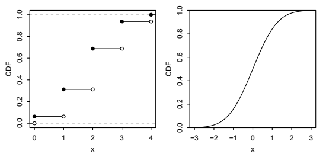
이산확률변수의 누적분포함수는 지지집합의 모든 점에서 도약하고 그 밖의 곳에서는 평평하다는 것을 떠올려 보자. 반면 연속확률변수의 누적분포함수는 매끄럽게 증가한다. 이산형과 연속형 누적분포함수의 비교는 그림 5.1을 보라.1
정의 5.1.1 (연속확률변수). 확률변수의 누적분포함수가 미분 가능하면 그 확률변수는 연속분포를 따른다. 또한 양 끝점이나 유한 개의 점에서 누적분포함수가 연속이지만 미분 가능하지 않더라도, 다른 모든 곳에서 미분 가능하면 허용한다. 연속확률변수는 연속분포를 따르는 확률변수이다.2
이산확률변수는 누적분포함수가 불연속적으로 도약하기 때문에 다루기 불편하고, 그 도함수도 도약점에서는 정의되지 않고 다른 곳에서는 0이어서 거의 쓸모가 없다. 하지만 연속확률변수는 누적분포함수를 다루기 편한 경우가 많으며, 그 도함수는 매우 유용한 함수로서 확률밀도함수라고 한다.3
정의 5.1.2 (확률밀도함수). 누적분포함수가 \(F\)인 연속확률변수 \(X\)에 대해 확률밀도함수(PDF)는 누적분포함수의 도함수 \(f\)이며 \(f(x)=F'(x)\)로 주어진다. \(X\)와 그 분포의 지지집합은 \(f(x)>0\)인 모든 \(x\)의 집합이다.4
연속확률변수가 이산확률변수와 다른 중요한 점은 모든 \(x\)에 대해 \(P(X=x)=0\)이라는 것이다. \(P(X=x)\)는 \(x\)에서 누적분포함수가 도약하는 높이인데, \(X\)의 누적분포함수에는 도약이 없기 때문이다! 연속확률변수의 확률질량함수는 모든 곳에서 0이므로 대신 확률밀도함수를 사용한다.
확률밀도함수는 여러 면에서 확률질량함수와 비슷하지만 중요한 차이가 있다. 확률밀도함수 \(f\)에 대해 \(f(x)\)는 확률이 아니며, 실제로 어떤 \(x\)에서는 \(f(x)>1\)일 수도 있다. 확률을 얻으려면 확률밀도함수를 적분해야 한다. 미적분학의 기본정리는 확률밀도함수에서 누적분포함수로 다시 돌아가는 방법을 알려 준다.
명제 5.1.3 (확률밀도함수에서 누적분포함수로). 확률밀도함수가 \(f\)인 연속확률변수 \(X\)를 생각하자. 그러면 \(X\)의 누적분포함수는 다음과 같다.
\[F(x)=\int_{-\infty}^{x}f(t)\,dt.\]
증명. 확률밀도함수의 정의에 따라 \(F\)는 \(f\)의 부정적분이다. 따라서 미적분학의 기본정리에 의해
\[\int_{-\infty}^{x}f(t)\,dt=F(x)-F(-\infty)=F(x).\qquad\blacksquare\]
위 결과는 이산형 누적분포함수의 \(x\)에서의 값을 \(x\) 이하인 모든 값에 대한 확률질량함수의 합으로 구했던 방법과 비슷하다. 여기서는 \(x\)까지의 모든 값에 대해 확률밀도함수를 적분하므로 누적분포함수는 확률밀도함수 아래의 누적 면적이다. 적분과 미분이라는 역연산을 이용해 확률밀도함수와 누적분포함수 사이를 자유롭게 오갈 수 있으므로, 두 함수는 모두 연속확률변수의 분포에 관한 완전한 정보를 담고 있다.
확률밀도함수가 분포를 결정하므로 이를 이용해 \(X\)가 구간 \((a,b)\)에 들어갈 확률도 구할 수 있어야 한다. 편리한 사실 하나는 끝점의 확률이 0이기 때문에 끝점을 포함하거나 제외해도 확률이 달라지지 않는다는 것이다.
\[P(a<X<b)=P(a<X\le b)=P(a\le X<b)=P(a\le X\le b).\]
주의 5.1.4 (끝점을 포함하거나 제외하기). 연속확률변수에서는 위와 같이 끝점을 포함하거나 제외하는 문제를 신경 쓰지 않아도 되지만, 이산확률변수에서는 이를 부주의하게 다루어서는 안 된다.
누적분포함수의 정의와 미적분학의 기본정리에 따라
\[P(a<X\le b)=F(b)-F(a)=\int_a^b f(x)\,dx.\]
따라서 확률밀도함수를 이용해 \(X\)가 구간 \((a,b]\) 또는 \((a,b)\), \([a,b)\), \([a,b]\)에 들어갈 확률을 구하려면 \(a\)부터 \(b\)까지 확률밀도함수를 적분하면 된다. 일반적으로 임의의 영역 \(A\subseteq\mathbb R\)에 대해5
\[P(X\in A)=\int_A f(x)\,dx.\]
요약하면 다음과 같다.
원하는 확률을 얻으려면 적절한 범위에서 확률밀도함수를 적분한다.
유효한 확률질량함수는 음이 아니고 합이 1이어야 하듯, 유효한 확률밀도함수는 음이 아니고 적분이 1이어야 한다.
정리 5.1.5 (유효한 확률밀도함수). 연속확률변수의 확률밀도함수 \(f\)는 다음 두 조건을 만족해야 한다.
- 비음성: \(f(x)\ge0\).
- 적분이 1: \(\int_{-\infty}^{\infty}f(x)\,dx=1\).
증명. 첫 번째 조건은 확률이 음이 아니므로 참이다. \(f(x_0)\)가 음수라면 \(x_0\) 주위의 아주 작은 영역에서 적분하여 음의 확률을 얻을 수 있을 것이다. 또는 \(x_0\)에서의 확률밀도함수는 그 점에서 누적분포함수의 기울기이므로 \(f(x_0)<0\)이면 누적분포함수가 그 점에서 감소하게 되는데, 이는 허용되지 않는다. 두 번째 조건은 \(\int_{-\infty}^{\infty}f(x)\,dx\)가 \(X\)가 실수 직선 위 어딘가에 들어갈 확률이며 그 값이 1이기 때문에 성립한다. \(\blacksquare\)6
역으로 이 두 조건을 만족하는 모든 함수 \(f\)는 어떤 확률변수의 확률밀도함수이다. \(f\)가 이 성질들을 만족하면 명제 5.1.3처럼 적분하여 누적분포함수의 성질을 만족하는 함수 \(F\)를 얻을 수 있기 때문이다. 그다음 5.3절의 핵심 개념인 균등분포의 보편성의 한 형태를 이용해 누적분포함수가 \(F\)인 확률변수를 만들 수 있다.7
이제 구체적인 확률밀도함수의 예를 살펴보자. 다음 예에 나오는 두 분포의 이름은 로지스틱 분포와 레일리 분포이지만, 여기서는 그 이야기들을 다루지 않는다. 이들을 등장시키는 주된 목적은 확률밀도함수에 익숙해지는 것이다.
예제 5.1.6 (로지스틱 분포). 로지스틱 분포의 누적분포함수는
\[F(x)=\frac{e^x}{1+e^x},\qquad x\in\mathbb R\]
이다. 누적분포함수를 미분하여 확률밀도함수를 얻으면
\[f(x)=\frac{e^x}{(1+e^x)^2},\qquad x\in\mathbb R.\]
\(X\sim\operatorname{Logistic}\)이라 하자. \(P(-2<X<2)\)를 구하기 위해 확률밀도함수를 \(-2\)부터 2까지 적분한다.
\[P(-2<X<2)=\int_{-2}^{2}\frac{e^x}{(1+e^x)^2}\,dx=F(2)-F(-2)\approx0.76.\]
이미 \(F\)가 \(f\)의 부정적분임을 알고 있었고 \(F\)의 식이 간단했기 때문에 적분값을 쉽게 구했다. 그렇지 않았다면 \(u=1+e^x\)로 치환하여 \(du=e^x\,dx\)를 얻고 다음과 같이 계산할 수도 있었다.
\[\int_{-2}^{2}\frac{e^x}{(1+e^x)^2}\,dx=\int_{1+e^{-2}}^{1+e^2}\frac1{u^2}\,du=\left(-\frac1u\right)\bigg|_{1+e^{-2}}^{1+e^2}\approx0.76.\]
그림 5.2는 로지스틱 확률밀도함수(왼쪽)와 누적분포함수(오른쪽)를 보여 준다. 확률 \(P(-2<X<2)\)는 확률밀도함수 그림에서 음영 처리된 면적, 누적분포함수 그림에서 중괄호의 높이로 표현된다. 유효한 확률밀도함수와 누적분포함수의 성질이 만족되는지 확인해 볼 수 있다. \(\square\)
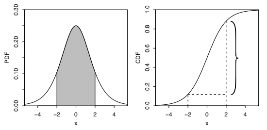
예제 5.1.7 (레일리 분포). 레일리 분포의 누적분포함수는
\[F(x)=1-e^{-x^2/2},\qquad x>0\]
이다. 누적분포함수를 미분하여 확률밀도함수를 얻으면
\[f(x)=xe^{-x^2/2},\qquad x>0.\]
\(x\le0\)에서는 누적분포함수와 확률밀도함수가 모두 0이다.
\(X\sim\operatorname{Rayleigh}\)라 하자. \(P(X>2)\)를 구하려면 확률밀도함수를 2부터 \(\infty\)까지 적분해야 한다. \(u=-x^2/2\)로 치환해 계산할 수 있지만, 누적분포함수가 이미 간단한 형태로 주어졌으므로 적분값이 \(F(\infty)-F(2)=1-F(2)\)임을 안다.
\[P(X>2)=\int_2^\infty xe^{-x^2/2}\,dx=1-F(2)\approx0.14.\]
그림 5.3에 레일리 확률밀도함수와 누적분포함수를 그렸다. 이번에도 확률은 확률밀도함수의 음영 면적과 누적분포함수의 수직 높이로 표현된다. \(\square\)
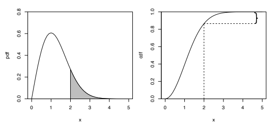
\(x\)에서의 확률밀도함수 높이는 확률을 나타내지 않지만, 다음 직관적 설명에서 보듯 \(x\) 주위의 아주 작은 구간에 들어갈 확률과 밀접하게 관련되어 있다.
직관 5.1.8 (단위). \(F\)와 \(f\)를 연속확률변수 \(X\)의 누적분포함수와 확률밀도함수라 하자. 앞에서 언급했듯이 \(f(x)\)는 확률이 아니다. 예를 들어 \(f(3)>1\)일 수도 있으며 \(P(X=3)=0\)임을 안다. 그러나 \(X\)가 3에 아주 가까울 확률을 생각하면 \(f(3)\)을 해석할 수 있다. 구체적으로 3을 중심으로 하고 길이가 \(\epsilon\)인 아주 작은 구간에 \(X\)가 들어갈 확률은 사실상 \(f(3)\epsilon\)이다. 구간이 너무 작아서 그 구간에서 \(f\)가 상수 \(f(3)\)과 거의 같다면
\[P(3-\epsilon/2<X<3+\epsilon/2)=\int_{3-\epsilon/2}^{3+\epsilon/2}f(x)\,dx\approx f(3)\epsilon\]
이기 때문이다. 일반적으로 \(f(x)\,dx\)를 \(X\)가 \(x\)를 포함하고 길이가 \(dx\)인 무한히 작은 구간에 들어갈 확률로 생각할 수 있다.
실제로 \(X\)는 거리, 시간, 넓이 또는 질량의 단위처럼 어떤 측정 체계의 단위를 갖는 경우가 많다. 단위를 생각하는 것은 응용 문제에서 중요할 뿐 아니라 답이 말이 되는지 확인하는 데도 도움이 되는 경우가 많다. 구체적으로 \(X\)가 센티미터(cm)로 측정한 길이라고 하자. 그러면 \(f(x)=dF(x)/dx\)는 \(x\)에서 센티미터당 확률이며, 이는 \(f(x)\)가 왜 확률밀도인지 설명해 준다. 확률은 물리적 단위가 없는 무차원 수이므로 \(f(x)\)의 단위는 \(\mathrm{cm}^{-1}\)이다. 따라서 다시 확률을 얻으려면 \(f(x)\)에 길이를 곱해야 한다. \(\int_0^5 f(x)\,dx\) 같은 적분을 계산할 때에는 흔히 잊히는 \(dx\)가 이를 해 준다. \(\square\)
직관 5.1.9 (시뮬레이션). 확률밀도함수를 직관적으로 생각하는 또 다른 방법으로, 확률밀도함수의 그래프를 보고 연속분포에서 \(X\)를 추출하는 과정을 시각적으로 시뮬레이션하는 다음 방법을 생각해 보자. \(X\)를 생성하려면 확률밀도함수 곡선 아래의 점을 균등하게 무작위로 하나 고른다. 이는 곡선 아래 어떤 영역에 속할 확률이 그 영역의 면적이라는 뜻이다. 그런 다음 무작위 점의 \(x\)좌표를 \(X\)로 둔다. 그림 5.4에 이를 나타냈다.
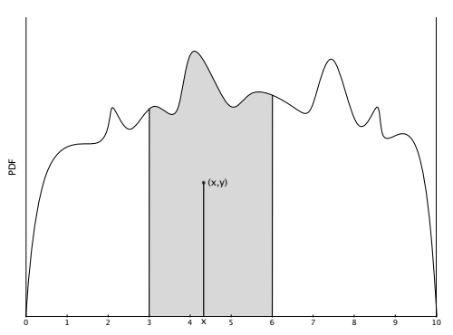
구성 방식에 따라 \(P(a\le X\le b)\)는 직선 \(x=a\)와 \(x=b\) 사이에서 확률밀도함수 아래에 있는 면적이므로 \(X\)는 원하는 분포를 따른다. 이 방법을 생각하면 특정 확률밀도함수 곡선에 따라 추출된 확률변수의 느낌을 얻어 확률밀도함수에 대한 직관을 기르는 데 도움이 된다. \(\square\)
연속확률변수의 기댓값 정의는 이산확률변수의 경우와 비슷하다. 합을 적분으로, 확률질량함수를 확률밀도함수로 바꾸면 된다.
정의 5.1.10 (연속확률변수의 기댓값). 확률밀도함수가 \(f\)인 연속확률변수 \(X\)의 기댓값(또는 평균)은
\[E(X)=\int_{-\infty}^{\infty}xf(x)\,dx\]
이다. 이산형의 경우와 마찬가지로 연속확률변수의 기댓값은 존재할 수도 있고 존재하지 않을 수도 있다. 기댓값에 대해 논의할 때 아직 존재함이 증명되지 않은 모든 기댓값을 언급할 때마다 “존재한다면”을 덧붙이는 것은 매우 번거로우므로, 흔히 이를 명시하지 않을 것이다.
적분은 실수 직선 전체에 대해 수행하지만, \(X\)의 지지집합이 실수 전체가 아니라면 지지집합에 대해서만 적분해도 된다. 이 정의의 단위도 말이 된다. \(X\)가 센티미터로 측정된다면 \(xf(x)\,dx\)의 단위가 \(\mathrm{cm}\cdot\mathrm{cm}^{-1}\cdot\mathrm{cm}=\mathrm{cm}\)이므로 \(E(X)\)의 단위도 센티미터이다.
이 정의 아래에서 기댓값은 질량중심이라는 해석을 그대로 유지한다. 그림 5.5에서 레일리 확률밀도함수를 예로 사용해 보여 주듯, 이산형에서 기댓값이 확률질량함수의 균형점이었던 것과 마찬가지로 연속형에서 기댓값은 확률밀도함수의 균형점이다.
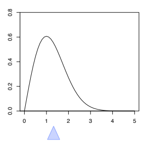
이산확률변수에서와 마찬가지로 기댓값의 선형성은 연속확률변수에도 성립한다. 이는 나중에 예제 7.2.4에서 보일 것이다. LOTUS도 연속확률변수에 대해 성립하며, 합을 적분으로, 확률질량함수를 확률밀도함수로 바꾸면 된다.
정리 5.1.11 (LOTUS, 연속형). \(X\)가 확률밀도함수 \(f\)를 갖는 연속확률변수이고 \(g\)가 \(\mathbb R\)에서 \(\mathbb R\)로 가는 함수이면8
\[E(g(X))=\int_{-\infty}^{\infty}g(x)f(x)\,dx.\]
이제 이 장에서 다루는 이름 붙은 분포들을 살펴보는 데 필요한 도구를 모두 갖추었다. 균등분포부터 시작하자.
5.2 균등분포
직관적으로 구간 \((a,b)\) 위의 균등 확률변수는 \(a\)와 \(b\) 사이의 완전히 무작위인 수이다. 구간 위에서 ‘완전히 무작위’라는 개념을 확률밀도함수가 그 구간에서 일정해야 한다고 정하여 형식화한다.
정의 5.2.1 (균등분포). \(a<b\)이고 연속확률변수 \(U\)의 확률밀도함수가
\[ f(x)=\begin{cases} \dfrac{1}{b-a},&a<x<b,\\ 0,&\text{그 밖의 경우} \end{cases} \]
이면 \(U\)가 구간 \((a,b)\) 위의 균등분포를 따른다고 한다. 이를 \(U\sim\operatorname{Unif}(a,b)\)로 나타낸다.
곡선 아래의 넓이는 폭이 \(b-a\), 높이가 \(1/(b-a)\)인 직사각형의 넓이와 같으므로 이는 유효한 확률밀도함수이다. 누적분포함수는 확률밀도함수 아래에 누적된 넓이이다.
\[ F(x)=\begin{cases} 0,&x\le a,\\ \dfrac{x-a}{b-a},&a<x<b,\\ 1,&x\ge b. \end{cases} \]
가장 자주 사용할 균등분포는 표준균등분포라고도 하는 \(\operatorname{Unif}(0,1)\) 분포이다. \(\operatorname{Unif}(0,1)\)의 확률밀도함수와 누적분포함수는 특히 단순하다. \(0<x<1\)에서 \(f(x)=1\)이고 \(F(x)=x\)이다. 그림 5.6은 \(\operatorname{Unif}(0,1)\)의 확률밀도함수와 누적분포함수를 나란히 보여 준다.
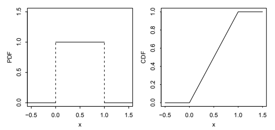
일반적인 \(\operatorname{Unif}(a,b)\) 분포에서 확률밀도함수는 \((a,b)\)에서 일정하고, 누적분포함수는 \(x\)가 \(a\)에서 \(b\)까지 변할 때 0에서 1까지 선형으로 증가하는 경사로 모양이다.
균등분포에서 확률은 길이에 비례한다.
명제 5.2.2. \(U\sim\operatorname{Unif}(a,b)\)이고 \((c,d)\)가 \((a,b)\)의 부분구간이며 그 길이가 \(l\)이라고 하자. 즉 \(l=d-c\)이다. 그러면 \(U\)가 \((c,d)\)에 속할 확률은 \(l\)에 비례한다. 예를 들어 길이가 두 배인 부분구간에는 \(U\)가 속할 확률도 두 배이며, 길이가 같은 부분구간에는 그 확률이 같다.
증명. \(U\)의 확률밀도함수는 \((a,b)\)에서 상수 \(1/(b-a)\)이므로, \(c\)부터 \(d\)까지 확률밀도함수 아래의 넓이는 \(l/(b-a)\)이다. 이는 상수와 \(l\)을 곱한 값이다. \(\blacksquare\)
위 명제는 균등분포의 매우 특별한 성질이다. 다른 어떤 분포에서도 길이는 같지만 확률이 다른 구간들을 찾을 수 있다. 균등 확률변수가 어떤 부분구간에 속한다는 조건을 주어도 여전히 균등분포를 얻으므로, 그 부분구간 안에서는 확률이 여전히 길이에 비례한다. 이를 아래에서 보인다.
명제 5.2.3. \(U\sim\operatorname{Unif}(a,b)\)이고 \(a\le c<d\le b\)인 부분구간 \((c,d)\)를 생각하자. 그러면 \(U\in(c,d)\)가 주어졌을 때 \(U\)의 조건부분포는 \(\operatorname{Unif}(c,d)\)이다.
증명. \(u\in(c,d)\)일 때 \(u\)에서의 조건부 누적분포함수는
\[ P(U\le u\mid U\in(c,d)) =\frac{P(U\le u,\ c<U<d)}{P(U\in(c,d))} =\frac{P(U\in(c,u])}{P(U\in(c,d))} =\frac{u-c}{d-c}. \]
조건부 누적분포함수는 \(u\le c\)일 때 0이고 \(u\ge d\)일 때 1이다. 따라서 \(U\)의 조건부분포는 주장한 것과 같다. \(\blacksquare\)
예제 5.2.4. \(U\sim\operatorname{Unif}(0,1)\)인 경우에 위 명제들을 살펴보자. 이 특수한 경우에는 지지집합의 길이가 1이므로 확률이 곧 길이이다. \(U\)가 구간 \((0,0.3)\)에 속할 확률은 0.3이고, \((0.3,0.6)\), \((0.4,0.7)\) 또는 \((0,1)\) 안에 있는 길이 0.3의 다른 어떤 구간에 속할 확률도 0.3이다.
이제 \(U\in(0.4,0.7)\)임을 알게 되었다고 하자. 이 정보가 주어졌을 때 \(U\)의 조건부분포는 \(\operatorname{Unif}(0.4,0.7)\)이다. 그러면 \(U\in(0.4,0.6)\)일 조건부확률은 \(2/3\)이다. \((0.4,0.6)\)의 길이가 \((0.4,0.7)\)의 길이 중 \(2/3\)을 차지하기 때문이다. \(U\in(0,0.6)\)일 조건부확률도 \(2/3\)이다. \(U\in(0.4,0.7)\)이라는 조건을 주면 0.4보다 왼쪽에 있는 점들은 버리기 때문이다. \(\square\)
다음으로 \(U\sim\operatorname{Unif}(a,b)\)의 평균과 분산을 구해 보자. 확률밀도함수가 일정하므로 기댓값은 직관적으로 매우 분명하다. 그 균형점은 \((a,b)\)의 중점이어야 한다. 연속확률변수의 기댓값 정의를 이용하면 정확히 이 결과를 얻는다.
\[ E(U)=\int_a^b x\cdot\frac{1}{b-a}\,dx =\frac{1}{b-a}\left(\frac{b^2}{2}-\frac{a^2}{2}\right) =\frac{a+b}{2}. \]
분산을 구하려면 먼저 LOTUS의 연속형 버전을 이용해 \(E(U^2)\)를 구한다.
\[ E(U^2)=\int_a^b x^2\frac{1}{b-a}\,dx =\frac13\cdot\frac{b^3-a^3}{b-a}. \]
그러면
\[ \operatorname{Var}(U)=E(U^2)-(EU)^2 =\frac13\cdot\frac{b^3-a^3}{b-a}-\left(\frac{a+b}{2}\right)^2. \]
\(b^3-a^3=(b-a)(a^2+ab+b^2)\)로 인수분해하고 정리하면
\[\operatorname{Var}(U)=\frac{(b-a)^2}{12}\]
를 얻는다.
위 유도는 그리 고통스럽지는 않지만 더 쉬운 방법이 있다. 연속분포에서 자주 유용한 기법을 사용하는 것이다. 이 기법을 위치-척도 변환이라고 하며, 균등 확률변수를 평행이동하고 크기를 조정하면 또 다른 균등 확률변수가 된다는 관찰에 의존한다. 평행이동은 위치의 변화, 크기 조정은 척도의 변화로 생각하므로 위치-척도라는 이름이 붙었다. 예를 들어 \(X\)가 구간 \((1,2)\)에서 균등분포를 따르면 \(X+5\)는 구간 \((6,7)\)에서, \(2X\)는 구간 \((2,4)\)에서, \(2X+5\)는 구간 \((7,9)\)에서 균등분포를 따른다.
정의 5.2.5 (위치-척도 변환). \(X\)를 확률변수라 하고 \(Y=\sigma X+\mu\)라 하자. 여기서 \(\sigma,\mu\)는 상수이고 \(\sigma>0\)이다. 그러면 \(Y\)를 \(X\)의 위치-척도 변환으로 얻었다고 말한다. 여기서 \(\mu\)는 위치가 어떻게 변하는지 조절하고 \(\sigma\)는 척도가 어떻게 변하는지 조절한다.
주의 5.2.6. 위치-척도 변환에서 \(X\sim\operatorname{Unif}(a,b)\)로 시작하여 \(Y=cX+d\)로 변환하자. 여기서 \(c,d\)는 상수이고 \(c>0\)이다. 그러면 \(Y\)는 \(X\)의 선형함수이고 균등성이 보존된다. 즉 \(Y\sim\operatorname{Unif}(ca+d,cb+d)\)이다. 그러나 \(Y\)를 \(X\)의 비선형 변환으로 정의하면 일반적으로 \(Y\)는 균등분포를 따르지 않는다. 예를 들어 \(0\le a<b\)이고 \(X\sim\operatorname{Unif}(a,b)\)이면 변환한 확률변수 \(Y=X^2\)의 지지집합은 \((a^2,b^2)\)이지만 그 구간에서 균등분포를 따르지 않는다. 8장에서는 확률변수의 변환을 자세히 살펴본다.
균등분포를 연구할 때 유용한 전략은 가장 단순한 균등분포를 갖는 확률변수에서 출발해 친숙하고 간단한 경우를 해결한 다음, 위치-척도 변환으로 일반적인 경우를 다루는 것이다.
이 전략으로 \(\operatorname{Unif}(a,b)\) 분포의 기댓값과 분산을 어떻게 구하는지 보자. 위치-척도 전략에 따라 \(U\sim\operatorname{Unif}(0,1)\)에서 시작한다. \(U\)의 확률밀도함수는 구간 \((0,1)\)에서 1이므로 다음을 쉽게 알 수 있다.
\[ E(U)=\int_0^1 x\,dx=\frac12,\qquad E(U^2)=\int_0^1 x^2\,dx=\frac13,\qquad \operatorname{Var}(U)=\frac13-\frac14=\frac1{12}. \]
이제 \(U\)에 대한 답을 알았으므로 \(U\)를 일반적인 \(\operatorname{Unif}(a,b)\) 확률변수로 변환하는 데는 두 단계만 필요하다. 먼저 지지집합을 길이 1인 구간에서 길이 \(b-a\)인 구간으로 바꾸므로 \(U\)에 척도 인자 \(b-a\)를 곱해 \(\operatorname{Unif}(0,b-a)\) 확률변수를 얻는다. 그다음 지지집합의 왼쪽 끝점이 \(a\)에 오도록 전체를 평행이동한다. 따라서 \(U\sim\operatorname{Unif}(0,1)\)이면 확률변수
\[\widetilde U=a+(b-a)U\]
는 \(\operatorname{Unif}(a,b)\) 분포를 따른다. 이제 \(\widetilde U\)의 평균과 분산은 기댓값과 분산의 성질에서 곧바로 나온다. 기댓값의 선형성에 따라
\[ E(\widetilde U)=E(a+(b-a)U) =a+(b-a)E(U)=a+\frac{b-a}{2}=\frac{a+b}{2}. \]
더하는 상수는 분산에 영향을 주지 않고 곱하는 상수는 제곱되어 나온다는 사실에 따라
\[ \operatorname{Var}(\widetilde U) =\operatorname{Var}(a+(b-a)U) =\operatorname{Var}((b-a)U) =(b-a)^2\operatorname{Var}(U) =\frac{(b-a)^2}{12}. \]
이는 앞에서 구한 답과 일치한다.
위치-척도 변환 기법은 한 분포 계열에 속하는 확률변수를 평행이동하고 크기 조정했을 때 그 계열에 속하는 분포를 가진 다른 확률변수를 얻는 모든 분포 계열에 적용된다. 이 기법은 지지집합이 고정된 이산분포 계열에는 적용되지 않는다. 예를 들어 \(X\sim\operatorname{Bin}(n,p)\)를 평행이동하거나 크기 조정하면 지지집합이 바뀌어 더 이상 이항분포를 따르지 않는 확률변수를 얻기 때문이다. 이항 확률변수는 0과 어떤 상한 사이의 모든 정수값을 취할 수 있어야 하지만, \(X+4\)는 \(\{0,1,2,3\}\)의 어떤 값도 취할 수 없고 \(2X\)는 짝수 값만 취할 수 있다. 따라서 어느 쪽도 이항분포를 따르지 않는다.
주의 5.2.7 (유감주술을 경계하라). 위치-척도 변환을 사용할 때 평행이동과 크기 조정은 확률밀도함수가 아니라 확률변수 자체에 적용해야 한다. 이 둘을 혼동하면 유감주술의 사례가 되고(주의 3.7.7 참조), 유효하지 않은 확률밀도함수가 만들어진다. 예를 들어 \(U\sim\operatorname{Unif}(0,1)\)이라 하자. 그러면 확률밀도함수 \(f\)는 \((0,1)\)에서 \(f(x)=1\)이고 그 밖에서는 \(f(x)=0\)이다. 이때 \(3U+1\sim\operatorname{Unif}(1,4)\)이지만, \(3f+1\)은 \((0,1)\)에서 4이고 그 밖에서 1인 함수이다. 이 함수는 적분값이 1이 아니므로 유효한 확률밀도함수가 아니다.
5.3 균등분포의 보편성
이 절에서는 균등분포의 놀라운 성질을 살펴본다. \(\operatorname{Unif}(0,1)\) 확률변수가 주어지면 원하는 어떤 연속분포를 따르는 확률변수도 만들 수 있다. 반대로 임의의 연속분포를 따르는 확률변수가 주어지면 \(\operatorname{Unif}(0,1)\) 확률변수를 만들 수 있다. 균등분포가 다른 분포를 따르는 확률변수를 만드는 보편적인 출발점이 된다는 뜻에서 이를 균등분포의 보편성이라 한다. 이 성질은 확률적분변환, 역변환 표본추출, 분위수 변환, 심지어 시뮬레이션의 기본 정리 등 여러 다른 이름으로도 불린다.
증명을 간단하게 하기 위해, 원하는 누적분포함수의 역함수가 존재함을 아는 경우에 대해 균등분포의 보편성을 서술하겠다. 비슷한 생각을 이용하면 \(\operatorname{Unif}(0,1)\) 확률변수의 함수로 원하는 어떤 누적분포함수에서든 무작위 추출값을 시뮬레이션할 수 있다.
정리 5.3.1 (균등분포의 보편성). \(F\)를 연속함수이고 분포의 지지집합에서 엄격히 증가하는 누적분포함수라 하자. 이 조건은 \((0,1)\)에서 \(\mathbb R\)으로 가는 함수로서 역함수 \(F^{-1}\)이 존재함을 보장한다. 그러면 다음이 성립한다.
- \(U\sim\operatorname{Unif}(0,1)\)이고 \(X=F^{-1}(U)\)라 하자. 그러면 \(X\)는 누적분포함수가 \(F\)인 확률변수이다.
- \(X\)의 누적분포함수가 \(F\)라 하자. 그러면 \(F(X)\sim\operatorname{Unif}(0,1)\)이다.
정리의 각 부분이 무엇을 말하는지 이해했는지 확인해 보자. 첫 번째 부분은 \(U\sim\operatorname{Unif}(0,1)\)과 누적분포함수 \(F\)에서 출발하여 \(U\)를 역누적분포함수 \(F^{-1}\)에 대입하면 누적분포함수가 \(F\)인 확률변수를 만들 수 있다고 말한다. \(F^{-1}\)은 분위수 함수라고 하는 함수이고, \(U\)는 확률변수이며, 확률변수의 함수도 확률변수이므로 \(F^{-1}(U)\)는 확률변수이다. 균등분포의 보편성은 이 확률변수의 누적분포함수가 \(F\)라고 말한다.
정리의 두 번째 부분은 역방향으로 진행한다. 누적분포함수가 \(F\)인 확률변수 \(X\)에서 출발하여 \(\operatorname{Unif}(0,1)\) 확률변수를 만든다. 여기서도 \(F\)는 함수이고 \(X\)는 확률변수이며 확률변수의 함수는 확률변수이므로 \(F(X)\)는 확률변수이다. 모든 누적분포함수는 어디서나 0과 1 사이이므로 \(F(X)\)는 반드시 0과 1 사이의 값을 취한다. 균등분포의 보편성에 따르면 \(F(X)\)의 분포는 \((0,1)\) 위의 균등분포이다.
주의 5.3.2. 균등분포의 보편성의 두 번째 부분에서는 확률변수 \(X\)를 자기 자신의 누적분포함수 \(F\)에 대입한다. 이것이 이상하게 자기 자신을 참조하는 것처럼 보일 수 있지만, \(F\)는 단지 유효한 누적분포함수의 성질을 만족하는 함수이고 확률변수의 함수는 확률변수이므로 타당하다. 다만 표기에서 혼동할 가능성이 있다. 정의에 따라 \(F(x)=P(X\le x)\)이지만, “\(F(X)=P(X\le X)=1\)”이라고 말하는 것은 잘못이다. 먼저 누적분포함수를 \(x\)의 함수로 나타내고, 그다음 \(x\)를 \(X\)로 바꾸어 확률변수를 얻어야 한다. 예를 들어 \(X\)의 누적분포함수가 \(x>0\)에서 \(F(x)=1-e^{-x}\)이면 \(F(X)=1-e^{-X}\)이다.
정리의 내용을 이해하는 것이 어려운 부분이며, 증명은 각 방향에 대해 두어 줄이면 충분하다.
증명.
\(U\sim\operatorname{Unif}(0,1)\)이고 \(X=F^{-1}(U)\)라 하자. 모든 실수 \(x\)에 대해
\[P(X\le x)=P(F^{-1}(U)\le x)=P(U\le F(x))=F(x),\]
따라서 주장한 대로 \(X\)의 누적분포함수는 \(F\)이다. 마지막 등식에는 \(u\in(0,1)\)에 대해 \(P(U\le u)=u\)라는 사실을 이용했다.
\(X\)의 누적분포함수를 \(F\)라 하고 \(Y=F(X)\)의 누적분포함수를 구하자. \(Y\)는 거의 확실하게 \((0,1)\)의 값을 취하므로 \(y\le0\)일 때 \(P(Y\le y)=0\)이고 \(y\ge1\)일 때는 1이다. \(y\in(0,1)\)이면
\[P(Y\le y)=P(F(X)\le y)=P(X\le F^{-1}(y))=F(F^{-1}(y))=y.\]
따라서 \(Y\)의 누적분포함수는 \(\operatorname{Unif}(0,1)\)의 누적분포함수이다. \(\blacksquare\)
분위수 함수 \(F^{-1}\)과 균등분포의 보편성이 뜻하는 바를 더 깊이 이해하기 위해 수많은 학생에게 익숙한 시험 백분위수 예제를 생각해 보자.
예제 5.3.3 (백분위수). 많은 학생이 0점부터 100점까지 점수를 매기는 시험을 치른다. 무작위로 고른 학생의 점수를 \(X\)라 하자. 여기서는 연속분포를 다루기가 더 쉬우므로 점수의 이산분포를 연속분포로 근사하자. \(X\)가 연속이고 그 누적분포함수 \(F\)가 \((0,100)\)에서 엄격히 증가한다고 하자. 실제로 학생 수도 가능한 점수도 유한하지만 연속분포가 좋은 근사일 수 있다.
시험 점수의 중앙값이 60이라고 하자. 즉 학생의 절반은 60점보다 높고 나머지 절반은 60점보다 낮다. 연속분포를 가정하면 점수가 정확히 60인 학생이 몇 명인지 걱정할 필요가 없다는 편리한 점이 있다. 이는 \(F(60)=1/2\), 동등하게 \(F^{-1}(1/2)=60\)이라는 뜻이다.
프레드가 72점을 받았다면 그의 백분위수는 72점보다 낮은 점수를 받은 학생의 비율이다. 이는 \(F(72)\)이며, 72가 중앙값보다 높으므로 \((1/2,1)\)에 속하는 수이다. 일반적으로 점수 \(x\)를 받은 학생의 백분위수는 \(F(x)\)이다. 반대로 백분위수, 가령 0.95에서 시작하면 \(F^{-1}(0.95)\)는 그 백분위수에 해당하는 점수이다. 백분위수는 분위수라고도 하므로 \(F^{-1}\)을 분위수 함수라고 부른다. 함수 \(F\)는 점수를 분위수로 바꾸고, 함수 \(F^{-1}\)은 분위수를 점수로 바꾼다.
\(X\)를 자기 자신의 누적분포함수에 대입하는 이상한 연산은 이제 자연스러운 해석을 갖는다. \(F(X)\)는 무작위 학생이 얻은 백분위수이다. 시험 점수의 분포는 균등분포와 매우 다른 모양인 경우가 흔하다. 예를 들어 \((70,80)\)이 가능한 점수 범위의 10%를 차지한다고 해서 점수의 10%가 그 구간에 있다고 생각할 이유는 없다.
반면 학생들의 백분위수 분포는 균등하다. 보편성에 따르면 \(F(X)\sim\operatorname{Unif}(0,1)\)이다. 예를 들어 학생의 50%가 0.5 이상의 백분위수를 가진다. 균등분포의 보편성은 학생의 10%가 0과 0.1 사이, 10%가 0.1과 0.2 사이, 10%가 0.2와 0.3 사이의 백분위수를 갖는 식으로 이어진다는 사실을 표현한다. 이는 백분위수의 정의에서 분명하다. \(\square\)
균등분포의 보편성을 설명하기 위해 앞 절에서 만난 로지스틱 분포와 레일리 분포에 이를 적용하자.
예제 5.3.4 (로지스틱 분포에서의 보편성). 로지스틱 누적분포함수는
\[F(x)=\frac{e^x}{1+e^x},\qquad x\in\mathbb R\]
이다. \(U\sim\operatorname{Unif}(0,1)\)이 주어져 있고 로지스틱 확률변수를 생성하고 싶다고 하자. 보편성의 첫 번째 부분에 따르면 \(F^{-1}(U)\sim\operatorname{Logistic}\)이므로 먼저 누적분포함수의 역함수 \(F^{-1}\)을 구한다.
\[F^{-1}(u)=\log\left(\frac{u}{1-u}\right).\]
이제 \(u\)에 \(U\)를 대입하면
\[F^{-1}(U)=\log\left(\frac U{1-U}\right).\]
따라서 \(\log\left(U/(1-U)\right)\sim\operatorname{Logistic}\)이다.
\(\log\left(U/(1-U)\right)\)가 원하는 누적분포함수를 갖는지 직접 확인할 수도 있다. 누적분포함수의 정의에서 시작해 대수 계산으로 부등식 한쪽에 \(U\)만 남기고, 균등분포의 누적분포함수를 이용한다. 연습 삼아 이 계산을 한 번 해 보자.
\[ \begin{aligned} P\left(\log\left(\frac U{1-U}\right)\le x\right) &=P\left(\frac U{1-U}\le e^x\right)=P\left(U\le e^x(1-U)\right)\\ &=P\left(U\le\frac{e^x}{1+e^x}\right)=\frac{e^x}{1+e^x}. \end{aligned} \]
이는 실제로 로지스틱 누적분포함수이다.
시뮬레이션을 이용해 균등분포의 보편성이 어떻게 작동하는지 시각화할 수도 있다. 이를 위해 \(\operatorname{Unif}(0,1)\) 확률변수 100만 개를 생성했다. 그런 다음 각 값 \(u\)를 \(\log(u/(1-u))\)로 변환했다. 균등분포의 보편성이 옳다면 변환된 수들은 로지스틱 분포를 따라야 한다.
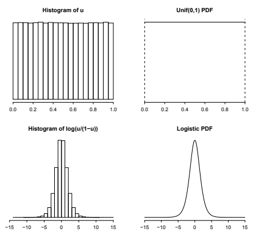
그림 5.7은 \(U\)의 실현값의 히스토그램을 \(\operatorname{Unif}(0,1)\) 확률밀도함수와 나란히 보여 준다. 그 아래에는 \(\log(U/(1-U))\)의 실현값의 히스토그램과 로지스틱 확률밀도함수가 나란히 있다. 보듯이 두 번째 히스토그램은 로지스틱 확률밀도함수와 매우 비슷하다. 따라서 \(F^{-1}\)을 적용하여 균등분포에서 추출한 값들을 로지스틱 분포에서 추출한 값들로 변환했다. 이는 균등분포의 보편성이 말하는 것과 정확히 같다.
반대로 보편성의 두 번째 부분에 따르면 \(X\sim\operatorname{Logistic}\)이면
\[F(X)=\frac{e^X}{1+e^X}\sim\operatorname{Unif}(0,1).\qquad\square\]
예제 5.3.5 (레일리 분포에서의 보편성). 레일리 누적분포함수는
\[F(x)=1-e^{-x^2/2},\qquad x>0\]
이다. 분위수 함수, 즉 누적분포함수의 역함수는
\[F^{-1}(u)=\sqrt{-2\log(1-u)}\]
이므로 \(U\sim\operatorname{Unif}(0,1)\)이면 \(F^{-1}(U)=\sqrt{-2\log(1-U)}\sim\operatorname{Rayleigh}\)이다.
다시 \(U\sim\operatorname{Unif}(0,1)\)의 실현값 100만 개를 생성하고 이를 변환하여 \(\sqrt{-2\log(1-U)}\)의 실현값 100만 개를 만들었다. 그림 5.8에서 보듯 이 실현값들은 균등분포의 보편성이 예측한 대로 레일리 확률밀도함수와 매우 비슷해 보인다.
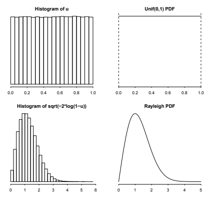
반대로 \(X\sim\operatorname{Rayleigh}\)이면 \(F(X)=1-e^{-X^2/2}\sim\operatorname{Unif}(0,1)\)이다. \(\square\)
다음으로 균등분포의 보편성이 이산확률변수에 대해 어느 정도 성립하는지 생각해 보자. 이산확률변수의 누적분포함수 \(F\)에는 도약과 평평한 구간이 있으므로 보통의 의미에서 \(F^{-1}\)이 존재하지 않는다. 하지만 첫 번째 부분은 여전히, 균등 확률변수가 주어지면 원하는 어떤 이산분포를 따르는 확률변수도 만들 수 있다는 의미로 성립한다. 차이는 역함수가 없는 누적분포함수 대신 확률질량함수를 다루는 것이 더 간단하다는 점이다.
\(U\sim\operatorname{Unif}(0,1)\)을 이용해 \(j=0,1,2,\ldots,n\)에 대해 확률질량함수가 \(p_j=P(X=j)\)인 이산확률변수 \(X\)를 만들고 싶다고 하자. 그림 5.9처럼 구간 \((0,1)\)을 길이가 \(p_0,p_1,\ldots,p_n\)인 조각으로 나눌 수 있다. 유효한 확률질량함수의 성질에 따라 \(p_j\)들의 합은 1이므로 구간을 남거나 모자라는 부분 없이 정확히 나눈다.
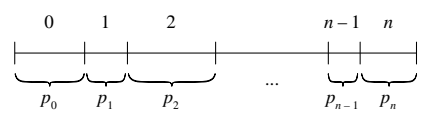
이제 \(U\)가 길이 \(p_0\)인 구간에 들어가면 0, 길이 \(p_1\)인 구간에 들어가면 1, 길이 \(p_2\)인 구간에 들어가면 2인 식으로 확률변수 \(X\)를 정의하자. 그러면 \(X\)는 0부터 \(n\)까지의 값을 취하는 이산확률변수이다. \(X=j\)일 확률은 \(U\)가 길이 \(p_j\)인 구간에 들어갈 확률이다. 그런데 \(\operatorname{Unif}(0,1)\) 확률변수에서는 확률이 길이와 같으므로 \(P(X=j)\)는 원하는 대로 정확히 \(p_j\)이다!
포아송 확률변수처럼 무한히 많은 값을 취할 수 있는 이산확률변수에도 같은 방법이 통한다. \((0,1)\)을 무한히 많은 조각으로 나누어야 하지만 조각들의 길이의 합은 여전히 1이다.
이제 임의의 확률질량함수를 받아 그 확률질량함수를 갖는 확률변수를 만드는 방법을 알았다. 이로써 정리 3.2.7에 주어진 성질을 만족하는 모든 함수가 어떤 확률변수의 확률질량함수라는 3장의 약속을 이행했다.
주의 5.3.6. 반면 균등분포의 보편성의 두 번째 부분은 이산확률변수에 대해 성립하지 않는다. 이산확률변수의 함수는 여전히 이산형이므로 \(X\)가 이산형이면 \(F(X)\)도 여전히 이산형이다. 따라서 \(F(X)\)는 균등분포를 따르지 않는다. 예를 들어 \(X\sim\operatorname{Bern}(p)\)이면 \(F(X)\)의 가능한 값은 \(F(0)=1-p\)와 \(F(1)=1\) 두 개뿐이다.
보편성의 요점은 균등 확률변수 \(U\)를 이용해 연속분포와 이산분포 양쪽에서 확률변수를 생성할 수 있다는 것이다. 연속형에서는 \(U\)를 역누적분포함수에 대입하고, 이산형에서는 원하는 확률질량함수에 따라 단위구간을 나눈다. 균등분포의 보편성의 첫 번째 부분은 시뮬레이션을 실행할 때 유용한 경우가 많다. 사용하는 소프트웨어가 균등 확률변수는 생성할 수 있어도 관심 있는 분포의 확률변수는 생성하지 못할 수 있기 때문이다. 다만 실제 유용성은 역누적분포함수를 얼마나 쉽게 계산할 수 있는지에 달려 있다. 두 번째 부분은 분포를 모르는 확률변수를 분포가 알려져 있고 단순한 균등 확률변수로 바꾸는 변환을 제공하므로 통계적 추론에서 널리 쓰이는 몇몇 기법에 중요하다.
분포를 청사진에, 확률변수를 집에 비유해 보자. 균등분포는 매우 단순한 청사진이며 그 청사진으로 집을 쉽게 만들 수 있다. 균등분포의 보편성의 아름다움은 그다음 균등분포라는 집을 다른 어떤 청사진의 집으로든, 아무리 복잡한 청사진일지라도, 고쳐 지을 수 있는 간단한 규칙을 준다는 것이다!
이 절을 마치면서 음이 아닌 확률변수의 기댓값을 구하는 데 자주 유용한 우아한 항등식을 제시한다. 이 항등식은 균등분포의 보편성, LOTUS, 누적분포함수와 분위수 함수 사이의 관계와 관련된 멋진 시각적 해석도 갖는다.
정의 5.3.7. 누적분포함수가 \(F\)인 확률변수 \(X\)의 생존함수는 \(G(x)=1-F(x)=P(X>x)\)로 주어지는 함수 \(G\)이다.
정리 5.3.8 (생존함수를 적분하여 구하는 기댓값). \(X\)를 음이 아닌 확률변수라 하자. 그 기댓값은 생존함수를 적분하여 구할 수 있다.
\[E(X)=\int_0^\infty P(X>x)\,dx.\]
이는 정리 4.4.8의 연속형 대응물이다. 다만 음이 아닌 연속확률변수뿐 아니라 모든 음이 아닌 확률변수에 대해 성립한다. 보험계리사들은 잘 알려지지 않은 이유로 이를 다스 베이더 법칙이라 부르기도 하지만, 통계학자들은 생존함수를 적분하여 기댓값을 구한다고 말하는 편이다.9
증명. 임의의 수 \(x\ge0\)에 대해
\[x=\int_0^x dt=\int_0^\infty I(x>t)\,dt\]
로 쓸 수 있다. 여기서 \(I(x>t)\)는 \(x>t\)이면 1이고 그렇지 않으면 0이다.10 따라서 표본공간의 각 \(s\)에 대해
\[X(s)=\int_0^\infty I(X(s)>t)\,dt\]
이다. 이를 더 간결히 쓰면
\[X=\int_0^\infty I(X>t)\,dt.\]
양변의 기댓값을 취하고 기댓값 \(E\)와 적분의 순서를 바꾸면, 실해석학의 결과를 이용해 이 교환을 정당화할 수 있으므로,
\[E(X)=E\left(\int_0^\infty I(X>t)\,dt\right)=\int_0^\infty E(I(X>t))\,dt=\int_0^\infty P(X>t)\,dt.\qquad\blacksquare\]
이 항등식을 시각적으로 설명하기 위해 누적분포함수를 그리고 한 영역의 넓이를 두 가지 방식, 즉 생존함수의 적분과 분위수 함수의 적분으로 해석할 수 있다.
누적분포함수가 \(F\)인 음이 아닌 연속확률변수의 전형적인 누적분포함수를 그림 5.10에 그렸다. 누적분포함수 곡선과 수평선 \(p=1\) 사이의 영역을 음영으로 표시했다. 이 넓이는 직선과 곡선의 차이인 \(1-F(x)\)를 0부터 \(\infty\)까지 적분하여 구할 수 있다.
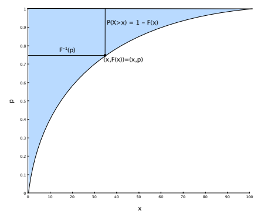
그런데 이 넓이를 구하는 또 다른 방법은 고개를 옆으로 돌려 가로축 변수 \(x\)가 아니라 세로축 변수 \(p\)에 관해 적분하는 것이다. 그러면 분위수 함수의 적분을 얻는다. \(U\sim\operatorname{Unif}(0,1)\)이라 하면 LOTUS와 균등분포의 보편성에 의해
\[\int_0^1F^{-1}(p)\,dp=E(F^{-1}(U))=E(X)\]
이다. 따라서 다시 다음을 얻는다.
\[\int_0^\infty(1-F(x))\,dx=\int_0^1F^{-1}(p)\,dp=E(X).\]
5.4 정규분포
정규분포는 종 모양의 확률밀도함수를 가진 유명한 연속분포이다. 통계학에서 매우 널리 사용되는 이유는 중심극한정리 때문이다. 이 정리는 매우 약한 가정 아래, 독립이고 동일한 분포를 따르는 확률변수가 많을 때 그 합이 개별 확률변수의 분포에 관계없이 대략 정규분포를 따른다는 것이다. 즉 이산형이든 연속형이든 거의 어떤 분포를 따르는 독립 확률변수들에서 시작하더라도, 이들을 많이 더하면 그 결과의 분포는 정규분포와 비슷해진다.11
중심극한정리는 10장에서 다룬다. 그전에 여기서는 정규분포의 확률밀도함수와 누적분포함수의 성질을 소개하고 기댓값과 분산을 유도한다. 이를 위해 다시 위치-척도 변환 전략을 사용한다. 먼저 평균이 0이고 분산이 1인 가장 단순한 정규분포인 표준정규분포에서 시작한다. 그 성질을 유도한 뒤에는 이동과 척도 변환을 이용하여 원하는 정규분포를 얻을 수 있다.
정의 5.4.1 (표준정규분포). 연속확률변수 \(Z\)의 확률밀도함수 \(\phi\)가
\[\phi(z)=\frac{1}{\sqrt{2\pi}}e^{-z^2/2},\qquad -\infty<z<\infty\]
이면 \(Z\)가 표준정규분포를 따른다고 한다. 앞으로 보이겠지만 \(Z\)의 평균이 0이고 분산이 1이므로 \(Z\sim\mathcal N(0,1)\)로 쓴다.
밀도함수 앞의 상수 \(1/\sqrt{2\pi}\)는 의외로 보일 수 있다. 원이 보이지도 않는데 왜 \(e\)가 들어간 식 앞에 \(\pi\)가 필요할까? 이 상수는 확률밀도함수의 적분이 1이 되도록 만드는 데 정확히 필요한 값이다. 이런 상수는 밀도함수 아래의 전체 면적을 1로 정규화하므로 정규화 상수라고 한다. 곧 이것이 유효한 확률밀도함수임을 확인할 것이다.
표준정규 누적분포함수 \(\Phi\)는 확률밀도함수 아래에 누적된 면적이다.
\[\Phi(z)=\int_{-\infty}^{z}\phi(t)\,dt=\int_{-\infty}^{z}\frac{1}{\sqrt{2\pi}}e^{-t^2/2}\,dt.\]
처음 \(\Phi\)를 보는 사람 중에는 함수가 적분 형태로 남아 있어 실망하는 이들도 있다. 안타깝게도 이 문제에서 선택의 여지는 거의 없다. \(\phi\)의 부정적분을 닫힌 형태로 표현하는 것은 수학적으로 불가능하다.12 즉 \(\Phi\)를 다항함수나 지수함수처럼 더 익숙한 함수들의 유한한 합으로 표현할 수 없다. 그러나 닫힌 형태가 있든 없든 이는 잘 정의된 함수이다. \(\Phi\)에 \(z\)를 입력하면 확률밀도함수 아래에서 \(-\infty\)부터 \(z\)까지 누적된 면적을 반환한다.
표기 5.4.2. 표준정규 확률밀도함수와 누적분포함수에 각각 고유한 그리스 문자가 있으니 정규분포는 특별한 분포임에 틀림없다. 관례에 따라 표준정규 확률밀도함수에는 \(\phi\), 누적분포함수에는 \(\Phi\)를 사용한다. 또한 표준정규 확률변수를 흔히 \(Z\)로 나타낸다.
그림 5.11은 표준정규 확률밀도함수와 누적분포함수의 그래프이다. 확률밀도함수는 종 모양이며 0에 대해 대칭이고, 누적분포함수는 S자 모양이다. 이는 예제 5.1.6에서 본 로지스틱 확률밀도함수와 누적분포함수의 전체적인 모양과 같지만, 정규 확률밀도함수는 훨씬 더 빠르게 0으로 감소한다.
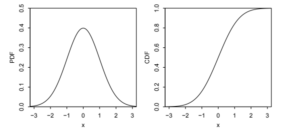
표준정규 확률밀도함수와 누적분포함수에서 몇 가지 중요한 대칭성을 이끌어 낼 수 있다.
확률밀도함수의 대칭성: \(\phi(z)=\phi(-z)\)가 성립한다. 즉 \(\phi\)는 짝함수이다.
꼬리 면적의 대칭성: 확률밀도함수 곡선 아래에서 \(-2\)의 왼쪽 면적은 정의에 의해 \(P(Z\le-2)=\Phi(-2)\)이며, \(2\)의 오른쪽 면적 \(P(Z\ge2)=1-\Phi(2)\)와 같다. 일반적으로 모든 \(z\)에 대해
\[\Phi(z)=1-\Phi(-z)\]
이다. 확률밀도함수의 곡선을 보면 이를 시각적으로 알 수 있으며, 아래 적분에서 \(u=-t\)로 치환하고 밀도함수의 적분이 1이라는 사실을 이용하면 수학적으로도 확인할 수 있다.
\[\Phi(-z)=\int_{-\infty}^{-z}\phi(t)\,dt=\int_z^\infty\phi(u)\,du=1-\int_{-\infty}^z\phi(u)\,du=1-\Phi(z).\]
\(Z\)와 \(-Z\)의 대칭성: \(Z\sim\mathcal N(0,1)\)이면 \(-Z\sim\mathcal N(0,1)\)도 성립한다. 이를 보려면 \(-Z\)의 누적분포함수가
\[P(-Z\le z)=P(Z\ge-z)=1-\Phi(-z)\]
임을 관찰하자. 방금 보인 결과에 따르면 이는 \(\Phi(z)\)이다. 따라서 \(-Z\)의 누적분포함수는 \(\Phi\)이다.
일반 정규분포를 다루기 전에 표준정규분포에 관한 세 가지 핵심 사실, 즉 \(\phi\)가 유효한 확률밀도함수이고 \(E(Z)=0\), \(\operatorname{Var}(Z)=1\)임을 보여야 한다.
\(\phi\)의 유효성을 확인하려면 \(e^{-z^2/2}\) 아래의 전체 면적이 \(\sqrt{2\pi}\)임을 보이면 된다. 하지만 앞에서 언급했듯이 부정적분을 닫힌 형태로 표현할 수 없다는 성가신 사실 때문에 \(e^{-z^2/2}\)의 부정적분을 직접 구할 수 없다. 그렇다고 약간의 기지를 발휘하여 정적분을 계산할 수 없는 것은 아니다.
놀라운 기법 하나가 해결해 준다. 적분을 두 번 써 보자. 보통 같은 문제를 반복해서 쓰는 것은 문제 해결 전략보다는 좌절의 표시이다. 하지만 이 경우에는 극좌표로 깔끔하게 변환할 수 있게 된다.
\[ \begin{aligned} \left(\int_{-\infty}^{\infty}e^{-z^2/2}\,dz\right) \left(\int_{-\infty}^{\infty}e^{-z^2/2}\,dz\right) &=\left(\int_{-\infty}^{\infty}e^{-x^2/2}\,dx\right) \left(\int_{-\infty}^{\infty}e^{-y^2/2}\,dy\right)\\ &=\int_{-\infty}^{\infty}\int_{-\infty}^{\infty}e^{-(x^2+y^2)/2}\,dx\,dy\\ &=\int_0^{2\pi}\int_0^\infty e^{-r^2/2}r\,dr\,d\theta. \end{aligned} \]
첫 단계에서는 각 적분의 \(z\)가 더미 변수일 뿐이므로 다른 이름, 즉 각 적분에서 서로 다른 이름으로 바꾸어도 된다는 사실을 이용했다. 마지막 단계에서 추가된 \(r\)은 극좌표 변환의 야코비안에서 나오며, 수학 부록 A.7.2절에 설명되어 있다. 바로 이 \(r\) 덕분에 원래 적분의 어려움도 해결된다. 이제 \(u=r^2/2\), \(du=r\,dr\)로 치환할 수 있기 때문이다. 그러면
\[ \int_0^{2\pi}\int_0^\infty e^{-r^2/2}r\,dr\,d\theta =\int_0^{2\pi}\left(\int_0^\infty e^{-u}\,du\right)d\theta =\int_0^{2\pi}1\,d\theta=2\pi. \]
따라서 보이고자 했던 대로
\[\int_{-\infty}^{\infty}e^{-z^2/2}\,dz=\sqrt{2\pi}.\]
표준정규분포의 기댓값은 확률밀도함수의 대칭성에 의해 0이어야 한다. 다른 어떤 균형점도 말이 되지 않는다. \(E(Z)\)의 정의를 보아도 이 대칭성을 알 수 있다.
\[E(Z)=\frac{1}{\sqrt{2\pi}}\int_{-\infty}^{\infty}ze^{-z^2/2}\,dz.\]
\(g(z)=ze^{-z^2/2}\)는 홀함수이므로(짝함수와 홀함수에 대해서는 수학 부록 A.2.3절을 보라), \(-\infty\)부터 0까지의 곡선 아래 면적과 0부터 \(\infty\)까지의 면적이 서로 상쇄된다. 따라서 \(E(Z)=0\)이다. 사실 같은 논증으로 모든 양의 홀수 \(n\)에 대해 \(E(Z^n)=0\)임을 알 수 있다.13
평균은 구하기 쉬웠지만(영어로는 ‘EZ’라고 할 수도 있다), 분산 계산은 조금 더 복잡하다. LOTUS에 의해
\[ \begin{aligned} \operatorname{Var}(Z)&=E(Z^2)-(EZ)^2=E(Z^2)\\ &=\frac{1}{\sqrt{2\pi}}\int_{-\infty}^{\infty}z^2e^{-z^2/2}\,dz\\ &=\frac{2}{\sqrt{2\pi}}\int_0^\infty z^2e^{-z^2/2}\,dz. \end{aligned} \]
마지막 단계에서는 \(z^2e^{-z^2/2}\)가 짝함수라는 사실을 이용했다. 이제 \(u=z\), \(dv=ze^{-z^2/2}\,dz\)로 두어 부분적분하면 \(du=dz\), \(v=-e^{-z^2/2}\)이고,
\[ \begin{aligned} \operatorname{Var}(Z) &=\frac{2}{\sqrt{2\pi}}\left(-ze^{-z^2/2}\Big|_0^\infty+\int_0^\infty e^{-z^2/2}\,dz\right)\\ &=\frac{2}{\sqrt{2\pi}}\left(0+\frac{\sqrt{2\pi}}2\right)=1. \end{aligned} \]
부분적분의 첫 번째 항이 0인 이유는 \(e^{-z^2/2}\)가 \(z\)의 증가보다 훨씬 더 빠르게 감소하기 때문이다. 두 번째 항은 \(e^{-z^2/2}\) 아래 전체 면적의 절반이므로 \(\sqrt{2\pi}/2\)이다. 전체 면적이 \(\sqrt{2\pi}\)임은 이미 증명했다. 따라서 표준정규분포의 평균은 실제로 0이고 분산은 1이다.
일반적인 정규분포에는 \(\mu\)와 \(\sigma^2\)로 나타내는 두 모수가 있으며, 이는 평균과 분산에 대응한다. 따라서 표준정규분포는 \(\mu=0\), \(\sigma^2=1\)인 특수한 경우이다. 표준정규 확률변수 \(Z\sim\mathcal N(0,1)\)에서 출발해 위치-척도 변환, 즉 이동과 척도 변환으로 원하는 평균과 분산을 가진 정규 확률변수를 얻을 수 있다.
정의 5.4.3 (정규분포). \(Z\sim\mathcal N(0,1)\)이면
\[X=\mu+\sigma Z\]
는 평균 \(\mu\), 분산 \(\sigma^2\)인 정규분포를 따른다고 한다. 여기서 \(\mu\)는 임의의 실수이고 \(\sigma>0\)이다. 이를 \(X\sim\mathcal N(\mu,\sigma^2)\)로 나타낸다.
기댓값과 분산의 성질에 따라 \(X\)의 평균이 실제로 \(\mu\), 분산이 \(\sigma^2\)임을 쉽게 알 수 있다.
\[E(\mu+\sigma Z)=E(\mu)+\sigma E(Z)=\mu,\qquad \operatorname{Var}(\mu+\sigma Z)=\operatorname{Var}(\sigma Z)=\sigma^2\operatorname{Var}(Z)=\sigma^2.\]
\(Z\)에 곱하는 것은 \(\sigma^2\)가 아니라 표준편차 \(\sigma\)라는 점에 유의하자. 그렇지 않으면 단위가 잘못되고 \(X\)의 분산은 \(\sigma^4\)가 된다.
물론 \(Z\)에서 \(X\)를 얻을 수 있으면 \(X\)에서 다시 \(Z\)를 얻을 수도 있다. 표준정규분포가 아닌 정규분포에서 표준정규분포를 얻는 과정을 적절하게도 표준화라고 한다. \(X\sim\mathcal N(\mu,\sigma^2)\)에 대해 \(X\)의 표준화된 형태는
\[\frac{X-\mu}{\sigma}\sim\mathcal N(0,1)\]
이다.
표준화를 이용하면 \(X\)의 누적분포함수와 확률밀도함수를 표준정규 누적분포함수와 확률밀도함수로 나타낼 수 있다.
정리 5.4.4 (정규분포의 누적분포함수와 확률밀도함수). \(X\sim\mathcal N(\mu,\sigma^2)\)라 하자. 그러면 \(X\)의 누적분포함수는
\[F(x)=\Phi\left(\frac{x-\mu}{\sigma}\right)\]
이고 확률밀도함수는
\[f(x)=\phi\left(\frac{x-\mu}{\sigma}\right)\frac1\sigma\]
이다.
증명. 누적분포함수는 정의 \(F(x)=P(X\le x)\)에서 출발하여 표준화한 뒤 표준정규 누적분포함수를 이용한다.
\[F(x)=P(X\le x)=P\left(\frac{X-\mu}{\sigma}\le\frac{x-\mu}{\sigma}\right)=\Phi\left(\frac{x-\mu}{\sigma}\right).\]
다음으로 연쇄법칙을 적용하는 것을 잊지 말고 미분하면 확률밀도함수를 얻는다.
\[f(x)=\frac{d}{dx}\Phi\left(\frac{x-\mu}{\sigma}\right)=\phi\left(\frac{x-\mu}{\sigma}\right)\frac1\sigma.\]
확률밀도함수를 풀어 쓰면
\[f(x)=\frac1{\sqrt{2\pi}\sigma}\exp\left(-\frac{(x-\mu)^2}{2\sigma^2}\right)\]
이다. \(\blacksquare\)
마지막으로 정규분포의 중요한 기준 세 가지는 평균에서 표준편차의 1배, 2배, 3배 이내에 들어올 확률이다. 68-95-99.7% 법칙에 따르면 이 확률은 이름이 암시하는 값과 같다.
정리 5.4.5 (68-95-99.7% 법칙). \(X\sim\mathcal N(\mu,\sigma^2)\)이면
\[P(|X-\mu|<\sigma)\approx0.68,\qquad P(|X-\mu|<2\sigma)\approx0.95,\qquad P(|X-\mu|<3\sigma)\approx0.997.\]
이 법칙을 이용하면 정규확률을 빠르게 근사할 수 있다.14 표준화한 후 적용하는 것이 더 쉬운 경우가 많은데, 이때는
\[P(|Z|<1)\approx0.68,\qquad P(|Z|<2)\approx0.95,\qquad P(|Z|<3)\approx0.997\]
이다.
예제 5.4.6 (표준정규 누적분포함수 연습). \(X\sim\mathcal N(-1,4)\)라 하자. \(P(|X|<3)\)의 정확한 값(\(\Phi\)로 표현한 값)과 근삿값은 얼마인가?
풀이. 사건 \(|X|<3\)은 사건 \(-3<X<3\)과 같다. 표준화를 통해 이 사건을 표준정규 확률변수 \(Z=(X-(-1))/2\)로 표현한 후 68-95-99.7% 법칙을 이용해 근삿값을 구한다. 정확한 값은
\[ \begin{aligned} P(-3<X<3)&=P\left(\frac{-3-(-1)}2<\frac{X-(-1)}2<\frac{3-(-1)}2\right)\\ &=P(-1<Z<2), \end{aligned} \]
즉 \(\Phi(2)-\Phi(-1)\)이다. 68-95-99.7% 법칙에 따르면 \(P(-1<Z<1)\approx0.68\)이고 \(P(-2<Z<2)\approx0.95\)이다. 다시 말해 표준편차 \(\pm1\)배에서 \(\pm2\)배로 범위를 넓히면 곡선 아래의 면적이 약 \(0.95-0.68=0.27\)만큼 늘어난다. 대칭성에 의해 이 값은 \(P(-2<Z<-1)\)과 \(P(1<Z<2)\)에 균등하게 나뉜다. 따라서
\[P(-1<Z<2)=P(-1<Z<1)+P(1<Z<2)\approx0.68+\frac{0.27}2=0.815.\]
이는 정확한 값 \(\Phi(2)-\Phi(-1)\approx0.8186\)에 가깝다. \(\square\)
이 책의 뒷부분에서 보겠지만, 정규 확률변수를 제곱하거나 지수화하는 등 자연스러운 변환을 통해 여러 중요한 분포를 얻을 수 있다. 8장에서 변환을 깊이 다루지만, 그전에 LOTUS와 누적분포함수의 성질만 이용해서도 할 수 있는 일이 많다.
예제 5.4.7 (접힌 정규분포). \(Z\sim\mathcal N(0,1)\)이고 \(Y=|Z|\)라 하자. \(Y\)의 분포를 모수가 \(\mu=0\), \(\sigma^2=1\)인 접힌 정규분포라고 한다. 이 예제에서는 \(Y\)의 평균, 분산, 분포를 유도한다. 절댓값 함수가 0에서 뾰족한 꼭짓점을 가지므로 미분 가능하지 않기 때문에 처음에는 \(Y\)를 다루기 어려워 보일 수 있지만, \(Y\)는 완전히 유효한 연속분포를 따른다.
\(E(Y)\)를 구하라.
\(\operatorname{Var}(Y)\)를 구하라.
\(Y\)의 누적분포함수와 확률밀도함수를 구하라.
풀이.
- 이 예제의 뒷부분에서 \(Y\)의 확률밀도함수를 유도하겠지만, \(E(Y)\)를 구하기 위해서는 LOTUS에 따라 \(Z\)의 확률밀도함수를 직접 사용할 수 있다.
\[E(Y)=E|Z|=\int_{-\infty}^{\infty}|z|\frac1{\sqrt{2\pi}}e^{-z^2/2}\,dz=2\int_0^\infty z\frac1{\sqrt{2\pi}}e^{-z^2/2}\,dz=\sqrt{\frac2\pi}.\]
- \(Y^2=Z^2\)이므로 적분을 다시 할 필요가 없다! \(E(Y^2)=E(Z^2)=\operatorname{Var}(Z)=1\)이므로
\[\operatorname{Var}(Y)=E(Y^2)-(E(Y))^2=1-\frac2\pi.\]
- \(y\le0\)이면 \(Y\)의 누적분포함수는 \(F_Y(y)=P(Y\le y)=0\)이다. \(y>0\)이면 누적분포함수는
\[F_Y(y)=P(Y\le y)=P(|Z|\le y)=P(-y\le Z\le y)=\Phi(y)-\Phi(-y)=2\Phi(y)-1.\]
따라서 \(Y\)의 확률밀도함수는 \(y\ge0\)에서 \(2\phi(y)\)이고 그 밖에서는 0이다. 여기서 \(\phi\)는 \(\mathcal N(0,1)\)의 확률밀도함수이다.
타당성 점검: 반드시 그래야 하듯 \(y\to\infty\)일 때 \(2\Phi(y)-1\to2-1=1\)이다. 또한 \(\Phi\)가 연속이고 0에서 도약이 없으므로 \(Y\)의 누적분포함수는 연속함수이다. 실제로 \(2\Phi(0)-1=0\)이다. 확률밀도함수도 타당하다. \(Z\)의 절댓값을 취하면 \(Z\)의 음수 구간에 있던 확률 질량이 양수 쪽으로 ‘접혀’ 넘어가기 때문이다. 예를 들어 \(-2\)와 \(-1\) 사이에 \(Z\)가 있을 확률은 1과 2 사이에 \(Y\)가 있을 확률에 기여한다. 그 결과 음수에서 밀도는 0이 되고 양수에서 밀도는 두 배가 된다. \(\square\)
5.5 지수분포
지수분포는 기하분포에 대응하는 연속분포이다. 기하 확률변수는 베르누이 시행의 수열에서 첫 성공 이전에 나타난 실패 횟수를 센다는 것을 떠올려 보자. 지수분포의 이야기도 이와 비슷하지만, 이제는 연속시간에서 성공을 기다리며, 성공은 단위 시간당 \(\lambda\)회의 비율로 도착한다. 길이가 \(t\)인 시간 구간에서 성공 횟수의 평균은 \(\lambda t\)이지만 실제 성공 횟수는 무작위로 달라진다. 지수 확률변수는 첫 성공이 도착할 때까지의 대기 시간을 나타낸다.
정의 5.5.1 (지수분포). 연속확률변수 \(X\)의 확률밀도함수가 다음과 같으면 \(X\)가 모수 \(\lambda\)인 지수분포를 따른다고 한다. 단, \(\lambda>0\)이다.
\[f(x)=\lambda e^{-\lambda x},\qquad x>0.\]
이를 \(X\sim\operatorname{Expo}(\lambda)\)로 쓴다. 이에 대응하는 누적분포함수는
\[F(x)=1-e^{-\lambda x},\qquad x>0\]
이다. \(\operatorname{Expo}(1)\)의 확률밀도함수와 누적분포함수는 그림 5.12에 나와 있다. 4장에서 본 기하분포의 확률질량함수와 누적분포함수와 닮았다는 점에 주목하자. 연습문제 43에서는 베르누이 시행을 점점 더 빠르게 수행하면서 성공 확률은 점점 더 작게 만드는 극한에서 기하분포가 어떤 의미로 지수분포에 수렴하는지 살펴본다.
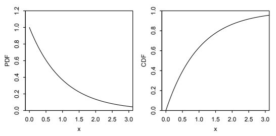
모든 균등분포와 정규분포가 위치-척도 변환을 통해 서로 연결된다는 것을 보았으므로 지수분포에서도 이 방법이 가능한지 궁금할 수 있다. 지수 확률변수의 지지집합은 \((0,\infty)\)로 정의되어 있어 위치를 이동하면 왼쪽 끝점이 달라진다. 하지만 척도 변환은 잘 작동한다. 이를 이용하면 간단한 \(\operatorname{Expo}(1)\)에서 일반적인 \(\operatorname{Expo}(\lambda)\)를 얻을 수 있다. \(X\sim\operatorname{Expo}(1)\)이면
\[Y=\frac{X}{\lambda}\sim\operatorname{Expo}(\lambda),\]
이다. 왜냐하면
\[P(Y\le y)=P\left(\frac{X}{\lambda}\le y\right)=P(X\le\lambda y)=1-e^{-\lambda y},\qquad y>0\]
이기 때문이다. 반대로 \(Y\sim\operatorname{Expo}(\lambda)\)이면 \(\lambda Y\sim\operatorname{Expo}(1)\)이다.
이는 균등분포와 정규분포에서 했듯이 \(X\sim\operatorname{Expo}(1)\)에서 출발하여 지수분포의 평균과 분산을 구할 수 있다는 뜻이다. \(E(X)\)와 \(\operatorname{Var}(X)\)는 모두 표준적인 부분적분 계산으로 얻을 수 있다. 그 결과는
\[ \begin{aligned} E(X)&=\int_0^\infty xe^{-x}\,dx=1,\\ E(X^2)&=\int_0^\infty x^2e^{-x}\,dx=2,\\ \operatorname{Var}(X)&=E(X^2)-(EX)^2=1. \end{aligned} \]
다음 장에서는 적분 없이 이 결과들을 얻을 수 있게 해 주는 새로운 도구인 적률생성함수를 소개한다.
\(Y=X/\lambda\sim\operatorname{Expo}(\lambda)\)이므로
\[ E(Y)=\frac1\lambda E(X)=\frac1\lambda,\qquad \operatorname{Var}(Y)=\frac1{\lambda^2}\operatorname{Var}(X)=\frac1{\lambda^2}. \]
따라서 \(\operatorname{Expo}(\lambda)\) 분포의 평균과 분산은 각각 \(1/\lambda\)와 \(1/\lambda^2\)이다. 직관적으로 예상하듯이 도착률 \(\lambda\)가 빠를수록 평균 대기 시간은 짧아진다.
지수분포에는 무기억성이라는 매우 특별한 성질이 있다. 이 성질은 몇 시간이나 며칠 동안 성공하지 못하고 기다렸더라도 성공이 곧 도착할 가능성이 더 높아지지 않는다는 뜻이다. 사실상 10초 전에 막 기다리기 시작한 것과 다름없다. 다음 정의는 이러한 생각을 형식화한다.
정의 5.5.2 (무기억성). 연속분포를 따르는 확률변수 \(X\)가 모든 \(s,t\ge0\)에 대해
\[P(X\ge s+t\mid X\ge s)=P(X\ge t)\]
를 만족하면 그 연속분포가 무기억성을 가진다고 한다.15
여기서 \(s\)는 이미 기다린 시간을 나타낸다. 이 정의는 \(s\)분을 기다린 후 앞으로 \(t\)분을 더 기다려야 할 확률이 이전에 기다린 시간 없이 처음부터 \(t\)분을 기다려야 할 확률과 정확히 같다는 뜻이다. 지수분포의 무기억성은 \(X\ge s\)가 주어졌을 때 추가 대기 시간 \(X-s\)가 여전히 \(\operatorname{Expo}(\lambda)\) 분포를 따른다고 표현할 수도 있다. 특히 이는
\[E(X\mid X\ge s)=s+E(X)=s+\frac1\lambda\]
임을 뜻한다. 조건부기댓값은 9장에서 자세히 설명하지만 그 의미는 지금도 분명할 것이다. 임의의 확률변수 \(X\)와 사건 \(A\)에 대해 \(E(X\mid A)\)는 \(A\)가 주어졌을 때 \(X\)의 기댓값이다. 이는 \(E(X)\)의 정의에서 \(X\)의 무조건부 확률질량함수나 확률밀도함수를 \(A\)가 주어졌을 때의 조건부 확률질량함수나 조건부 확률밀도함수로 대체하여 정의할 수 있다.
조건부확률의 정의를 이용하면 지수분포가 무기억성을 가진다는 것을 직접 확인할 수 있다. \(X\sim\operatorname{Expo}(\lambda)\)라 하자. 그러면
\[ P(X\ge s+t\mid X\ge s) =\frac{P(X\ge s+t)}{P(X\ge s)} =\frac{e^{-\lambda(s+t)}}{e^{-\lambda s}} =e^{-\lambda t}=P(X\ge t). \]
무기억성은 어떤 의미를 갖는가? 버스 정류장에서 기다리고 있는데 버스가 도착할 때까지의 시간이 지수분포를 따른다면, 이미 30분을 기다렸다는 조건 아래에서도 버스가 곧 도착할 차례인 것은 아니다. 이 분포는 당신이 30분을 기다렸다는 사실을 잊어버리며, 남은 대기 시간은 정류장에 막 도착했을 때와 같은 분포를 따른다. 기계의 수명이 지수분포를 따른다면 그 기계가 얼마나 오래 작동했든, 그때까지 살아남았다는 조건 아래에서는 기계가 새것과 같다. 곧 고장 날 가능성을 높이는 마모 효과가 없기 때문이다. 사람의 수명이 지수분포를 따른다면 80세까지 생존했다는 조건 아래에서 남은 수명은 신생아의 수명과 같은 분포를 따를 것이다!
무기억성은 사람이나 기계의 수명을 기술하는 데는 분명 적절하지 않다. 그렇다면 지수분포에 관심을 가지는 이유는 무엇일까?
- 방사성 붕괴와 같은 일부 물리 현상은 실제로 무기억성을 보이므로 지수분포 자체가 중요한 모형이다.
- 지수분포는 다른 이름 붙은 분포들과 잘 연결되어 있다. 다음 절에서는 지수분포와 포아송 분포가 하나의 공통된 이야기로 어떻게 통합되는지 보며, 이후의 장에서 더 많은 연결을 발견할 것이다.
- 지수분포는 더 유연한 분포를 구성하는 기본 요소로 쓰인다. 예를 들어 6장에서 소개하는 와이블 분포는 마모 효과(오래된 개체가 곧 고장 날 가능성이 높아지는 효과) 또는 적자생존 효과(오래 살아남을수록 더 강해지는 효과)를 허용한다. 이런 분포를 이해하려면 먼저 지수분포를 이해해야 한다.
무기억성은 지수분포의 매우 특별한 성질이다. \((0,\infty)\) 위의 다른 어떤 연속분포도 무기억성을 갖지 않는다! 이를 증명해 보자.
정리 5.5.3. 양의 연속확률변수 \(X\)가 무기억성을 가지면 \(X\)는 지수분포를 따른다.
증명. \(X\)가 무기억성을 갖는 양의 연속확률변수라고 하자. \(F\)를 \(X\)의 누적분포함수라 하고, \(G(x)=1-F(x)\)로 주어지는 \(X\)의 생존함수를 \(G\)라 하자. 먼저 모든 실수 \(x>0\)에 대해 \(G(xt)=G(t)^x\)임을 보인 뒤, 어떤 \(\lambda\)에 대하여 \(G(x)=e^{-\lambda x}\)임을 보일 것이다. 무기억성에 따르면 모든 \(s,t\ge0\)에 대해
\[G(s+t)=G(s)G(t).\]
\(s=t\)로 놓으면 \(G(2t)=G(t)^2\)이므로
\[G(3t)=G(2t+t)=G(2t)G(t)=G(t)^3,\qquad G(4t)=G(t)^4,\ldots.\]
따라서 양의 정수 \(m\)에 대해 \(G(mt)=G(t)^m\)이다. 이를 단계적으로 확장하자. \(G(2t)=G(t)^2\)에서 \(t\)를 \(t/2\)로 바꾸면 \(G(t/2)=G(t)^{1/2}\)이다. 마찬가지로 모든 양의 정수 \(n\)에 대해
\[G\left(\frac tn\right)=G(t)^{1/n}.\]
따라서 모든 양의 정수 \(m,n\)에 대해
\[G\left(\frac mn t\right)=\left(G\left(\frac tn\right)\right)^m=G(t)^{m/n}\]
이므로 모든 양의 유리수 \(x\)에 대해 \(G(xt)=G(t)^x\)이다. 모든 양의 실수는 양의 유리수들의 극한으로 쓸 수 있으므로, \(G\)가 연속함수라는 사실을 이용하면 이 등식은 모든 양의 실수 \(x\)에 대해서도 성립한다. \(t=1\)로 놓으면
\[G(x)=G(1)^x=e^{-\lambda x},\]
여기서 \(\lambda=-\log G(1)>0\)이다. 이는 원하던 \(G\)의 형태이므로 \(X\)는 지수분포를 따른다. \(\blacksquare\)
무기억성은 이산분포에 대해서도 비슷하게 정의한다. 그 분포를 따르는 확률변수 \(X\)가 모든 음이 아닌 정수 \(j,k\)에 대해
\[P(X\ge j+k\mid X\ge j)=P(X\ge k)\]
를 만족하면 그 이산분포는 무기억성을 갖는다. 기하분포와 지수분포의 이야기가 비슷하다는 점에서, 또는 4장 연습문제 32를 풀었다면, 기하분포가 무기억성을 갖는다고 짐작할 수 있다. 그렇다면 그 짐작은 옳다! 공정한 동전을 계속 던져 첫 앞면을 기다리고 있는데 운이 나빠 우연히 뒷면이 열 번 연속 나왔더라도, 앞으로 몇 번 더 던져야 하는지에는 아무 영향이 없다. 동전이 이제 앞면을 내야 할 차례인 것도 아니고, 영원히 뒷면만 내려고 우리를 상대로 음모를 꾸미는 것도 아니다. 동전에는 기억이 없다. 기하분포는 \(\{0,1,2,\ldots\}\)에 값을 갖는 유일한 무기억 이산분포이고, 지수분포는 \((0,\infty)\)에 값을 갖는 유일한 무기억 연속분포이다.16
무기억성의 연습으로 다음 예에서는 무기억성을 갖는 대중교통 시스템이 있는 마을로 이사한 뒤 그 성질의 답답함을 직접 경험하게 되는 프레드의 모험을 살펴본다.
예제 5.5.4 (블리스빌과 블로치빌). 프레드는 버스가 항상 정확히 정시에 도착하고 연속된 버스 사이의 시간이 10분으로 일정한 블리스빌에 산다. 시계를 잃어버린 그는 어느 날 균등하게 무작위인 시각에 버스 정류장에 도착한다. 버스는 매일 24시간 운행하며 프레드의 도착 시각은 버스 도착 과정과 독립이라고 가정한다.
프레드가 다음 버스를 기다려야 하는 시간의 분포는 무엇인가? 프레드의 평균 대기 시간은 얼마인가?
6분이 지나도록 버스가 도착하지 않았다는 조건 아래에서 적어도 3분을 더 기다려야 할 확률은 얼마인가?
프레드는 도시계획이 열악하고 버스가 훨씬 불규칙한 도시인 블로치빌로 이사한다. 이제 어떤 버스가 도착하고 나면 다음 버스가 도착할 때까지의 시간은 평균이 10분인 지수 확률변수이다. 프레드는 무작위 시각에 정류장에 도착한다. 블로치빌이 영원한 과거부터 앞으로도 영원히 이 시스템을 따르고, 프레드의 도착 시각은 버스 도착 과정과 독립이라고 가정한다.17 프레드의 다음 버스 대기 시간의 분포는 무엇인가? 평균 대기 시간은 얼마인가?
- 프레드가 블로치빌의 교통이 얼마나 더 나쁜지 친구에게 불평하자 친구는 말한다. “그만 좀 투덜대! 너는 이전 버스가 온 시각과 다음 버스가 올 시각 사이의 균등한 한 순간에 도착하잖아. 버스 사이 간격의 평균 길이는 10분이지만, 그 간격의 어느 시각에 도착할 가능성도 같으니까 네 평균 대기 시간은 5분뿐이야.” 프레드는 경험상으로도, 버스를 기다리며 (c)를 풀어 본 결과로도 이에 동의하지 않는다. 친구의 추론에서 무엇이 잘못되었는지 설명하라.
풀이.
분포는 \((0,10)\) 위의 균등분포이므로 평균은 5분이다.
대기 시간을 \(T\)라 하자. 그러면
\[P(T\ge6+3\mid T>6)=\frac{P(T\ge9,T>6)}{P(T>6)}=\frac{P(T\ge9)}{P(T>6)}=\frac{1/10}{4/10}=\frac14.\]
특히 블리스빌에서 프레드의 대기 시간은 무기억성을 갖지 않는다. 이미 6분을 기다렸다는 조건 아래에서는 적어도 3분을 더 기다릴 확률이 \(1/4\)뿐이다. 반면 정류장에 막 도착했다면 적어도 3분을 기다릴 확률은 \(P(T\ge3)=7/10\)이다.
무기억성에 따라 프레드가 언제 도착했는지와 관계없이 분포는 모수가 \(1/10\)이고 평균이 10분인 지수분포이다. 다음 버스가 도착하기까지 남은 시간은 이전 버스가 도착한 지 얼마나 지났는지와 독립이다. 프레드의 평균 대기 시간은 10분이다.
프레드의 친구는 주의 4.1.3에서 설명한 실수를 하고 있다. 확률변수인 버스 사이의 시간을 그 기댓값 10분으로 대체하여 버스 도착 간격의 변동성을 무시한 것이다. 두 버스 사이의 시간 간격의 평균 길이는 10분이지만, 프레드가 이 간격들 각각에 도착할 가능성은 같지 않다. 프레드는 짧은 버스 간격보다 긴 버스 간격 동안 도착할 가능성이 더 높다. 예를 들어 버스 사이 한 간격이 50분이고 다른 간격이 5분이라면 프레드는 50분짜리 간격 동안 도착할 가능성이 10배이다.
이 현상은 길이 편향 표본추출로 알려져 있으며 많은 실제 상황에서 나타난다. 예를 들어 무작위로 선택한 어머니들에게 자녀 수를 묻는 경우와 무작위로 선택한 사람들에게 자신을 포함한 형제자매 수를 묻는 경우에는 서로 다른 분포를 얻게 된다. 학생들에게 학급 크기를 물어 그 결과를 평균하면 학급의 목록을 만들어 각 학급의 크기를 평균한 결과보다 훨씬 큰 값이 나올 수 있다. 이를 학급 크기 역설이라 한다. 학급 크기 역설과 길이 편향 표본추출에 관해서는 4장 연습문제 16과 17을 보라.
블리스빌과 블로치빌에서의 프레드의 모험은 연습문제에서 계속된다. 프레드의 더 많은 모험에 대해서는 MacKay [17]도 보라. 블로치빌의 버스 도착은 다음 절의 주제인 포아송 과정을 따른다. \(\square\)
5.6 포아송 과정
두 분포의 모수에 모두 \(\lambda\)를 사용한 것에서 짐작할 수 있듯이, 지수분포는 포아송 분포와 밀접하게 연결되어 있다. 이 절에서는 지수분포와 포아송 분포가 공통의 이야기로 연결됨을 볼 것이다. 바로 포아송 과정의 이야기이다. 포아송 과정은 시간축의 서로 다른 시점에 발생하는 도착들의 열로, 특정 시간 구간에 발생하는 도착의 수가 포아송 분포를 따른다. 포아송 과정은 13장에서 훨씬 자세히 다루지만, 지금도 그 정의와 기본 성질을 이해하는 데 필요한 도구를 갖추고 있다.
정의 5.6.1 (포아송 과정). 연속시간에서의 도착 과정이 다음 두 조건을 만족하면 도착률이 \(\lambda\)인 포아송 과정이라고 한다.
- 길이가 \(t\)인 구간에서 발생하는 도착의 수는 \(\operatorname{Pois}(\lambda t)\) 확률변수이다.
- 서로 겹치지 않는 구간들에서 발생하는 도착의 수는 서로 독립이다. 예를 들어 구간 \((0,10)\), \([10,12)\), \([15,\infty)\)에서 발생하는 도착의 수는 서로 독립이다.18
이 절에서는 \((0,\infty)\) 위의 포아송 과정에 집중한다. 하지만 \((-\infty,\infty)\)나 다른 구간 위의 포아송 과정도 정의할 수 있으며, 13장에서는 다차원의 포아송 과정도 소개한다. 그림 5.13은 \((0,\infty)\) 위의 포아송 과정을 개략적으로 나타낸다. 각 \(\times\)는 도착이 일어난 위치를 표시한다.
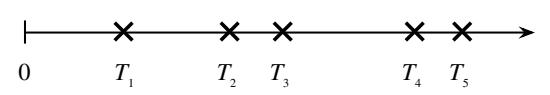
구체적으로 도착률 \(\lambda\)인 포아송 과정에 따라 이메일이 받은 편지함에 도착한다고 하자. 이 과정에 대해 알고 싶은 것들이 여럿 있을 수 있다. 한 가지 질문은 한 시간 동안 이메일이 몇 통 도착하는가이다. 답은 정의에서 바로 나온다. 한 시간 동안 도착한 이메일의 수는 \(\operatorname{Pois}(\lambda)\) 분포를 따른다. 이메일의 수는 음이 아닌 정수이므로 이산분포가 적절하다는 점에 유의하자.
하지만 질문을 뒤집어 첫 번째 이메일이 도착할 때까지 얼마나 걸리는지 물을 수도 있다. 이 시간은 어떤 고정된 시작점을 기준으로 측정한다. 첫 번째 이메일을 기다리는 시간은 양의 실수이므로 \((0,\infty)\) 위의 연속분포가 적절하다. 첫 이메일이 도착할 때까지의 시간을 \(T_1\)이라 하자. \(T_1\)의 분포를 구하려면 다음 핵심 사실 하나만 이해하면 된다. 첫 이메일까지의 대기 시간이 \(t\)보다 크다는 말은 0과 \(t\) 사이에 이메일이 하나도 도착하지 않았다는 말과 같다. 다시 말해 \(N_t\)를 시간 \(t\) 또는 그 이전에 도착한 이메일의 수라 하면
\[T_1>t\quad\text{와}\quad N_t=0\quad\text{은 같은 사건이다.}\]
이를 개수-시간 이중성이라고 부른다. 도착 수를 세는 이산확률변수 \(N_t\)와 첫 도착의 시간을 나타내는 연속확률변수 \(T_1\)을 연결하기 때문이다. 더 일반적으로 개수-시간 이중성은 다음을 말한다.
\[T_n>t\quad\text{와}\quad N_t<n\quad\text{은 같은 사건이다.}\]
\(t\) 시점까지 \(n\)번째 도착이 아직 일어나지 않았다는 말은 \(t\)까지 도착이 \(n\)번보다 적게 일어났다는 말과 동등하다.
두 사건이 같으면 확률도 같다. 포아송 과정의 정의에 의해 \(N_t\sim\operatorname{Pois}(\lambda t)\)이므로
\[P(T_1>t)=P(N_t=0)=\frac{e^{-\lambda t}(\lambda t)^0}{0!}=e^{-\lambda t}.\]
따라서 \(P(T_1\le t)=1-e^{-\lambda t}\)이므로 \(T_1\sim\operatorname{Expo}(\lambda)\)이다! 도착률 \(\lambda\)인 포아송 과정에서 첫 도착까지의 시간은 모수 \(\lambda\)인 지수분포를 따른다.
첫 번째와 두 번째 도착 사이의 시간 \(T_2-T_1\)은 어떨까? 정의에 따라 포아송 과정의 서로 겹치지 않는 구간들은 독립이므로, 첫 번째 도착이 발생하면 과거는 무관해진다. 따라서 \(T_2-T_1\)은 첫 도착까지의 시간과 독립이고, 앞과 같은 논증에 의해 \(T_2-T_1\) 역시 도착률 \(\lambda\)인 지수분포를 따른다.19
마찬가지로 \(T_3-T_2\sim\operatorname{Expo}(\lambda)\)이고 \(T_1\) 및 \(T_2-T_1\)과 독립이다. 이 과정을 계속하면 모든 도착 간격이 i.i.d. \(\operatorname{Expo}(\lambda)\) 확률변수라는 결론을 얻는다. 따라서 포아송 과정은 하나는 이산형이고 하나는 연속형인 두 중요한 분포를 묶어 준다. 두 분포의 모수에 같은 기호 \(\lambda\)를 사용한 것은 적절하다. 이 두 분포를 하나로 묶는 과정에서 \(\lambda\)가 도착률이기 때문이다.
주의 5.6.2. 두 번째 도착까지의 총 시간 \(T_2\)는 독립인 두 \(\operatorname{Expo}(\lambda)\) 확률변수 \(T_1\)과 \(T_2-T_1\)의 합이다. 이 합은 지수분포를 따르지 않고 8장에서 소개하는 감마분포를 따른다.
포아송 과정의 이야기는 다음에서 보이듯 독립인 지수 확률변수들의 최솟값이 다시 지수 확률변수라는 사실에 대한 직관을 제공한다.
예제 5.6.3 (독립인 지수 확률변수들의 최솟값). \(X_1,\ldots,X_n\)이 독립이고 \(X_j\sim\operatorname{Expo}(\lambda_j)\)라 하자. \(L=\min(X_1,\ldots,X_n)\)으로 놓자. \(L\sim\operatorname{Expo}(\lambda_1+\cdots+\lambda_n)\)임을 보이고 이를 직관적으로 해석하라.
풀이. 생존함수는 누적분포함수의 1에서 뺀 값이므로 생존함수 \(P(L>t)\)를 고려해 \(L\)의 분포를 구할 수 있다. 아래 식은 \(t\ge0\)에서 성립하며 \(t<0\)에서는 \(P(L>t)=1\)이다.
\[ \begin{aligned} P(L>t)&=P(\min(X_1,\ldots,X_n)>t)=P(X_1>t,\ldots,X_n>t)\\ &=P(X_1>t)\cdots P(X_n>t)=e^{-\lambda_1t}\cdots e^{-\lambda_nt} =e^{-(\lambda_1+\cdots+\lambda_n)t}. \end{aligned} \]
두 번째 등식은 \(X_j\)의 최솟값이 \(t\)보다 크다는 말이 모든 \(X_j\)가 \(t\)보다 크다는 말과 같기 때문에 성립한다. 세 번째 등식은 \(X_j\)들의 독립성에 의해 성립한다. 따라서 \(L\)은 모수가 \(\lambda_1+\cdots+\lambda_n\)인 지수분포의 생존함수와 누적분포함수를 갖는다.
직관적으로 \(\lambda_j\)를 서로 독립인 \(n\)개 포아송 과정의 도착률로 해석할 수 있다. 예를 들어 \(X_1\)은 초록색 자동차가 지나갈 때까지의 대기 시간이고 \(X_2\)는 파란색 자동차가 지나갈 때까지의 대기 시간인 식으로 각 \(X_j\)에 색을 하나씩 배정한다고 상상해 보자. 그러면 \(L\)은 이 색들 중 어느 하나를 가진 자동차가 지나갈 때까지의 대기 시간이므로 \(L\)의 합쳐진 도착률이 \(\lambda_1+\cdots+\lambda_n\)이라는 사실은 자연스럽다. \(\square\)
주의 5.6.4. 독립인 지수 확률변수들의 최솟값은 지수분포를 따르지만 최댓값은 그렇지 않다. 그러나 다음 두 예에서 보듯 최솟값에 관한 결과는 그러한 최댓값을 연구할 때 유용하다.20
예제 5.6.5 (독립인 지수 확률변수 세 개의 최댓값). 세 학생이 서로 독립적으로 확률론 숙제를 하고 있다. 세 학생 모두 어느 날 오후 1시에 시작하며, 각 학생이 숙제를 끝내는 데 걸리는 시간은 평균이 6시간인 지수분포를 따른다. 세 학생이 모두 숙제를 마치는 가장 이른 시각은 평균적으로 언제인가?
풀이. 학생을 1, 2, 3으로 구분하고 \(X_j\)를 학생 \(j\)가 숙제를 마치는 데 걸리는 시간이라 하자. \(\lambda=1/6\)으로 놓고 세 학생이 모두 숙제를 마치는 시간을 \(T\)라 하자. 그러면 \(T=\max(X_1,X_2,X_3)\)이고 \(X_i\sim\operatorname{Expo}(\lambda)\)이다. \(t\ge0\)일 때 \(T\)의 누적분포함수는
\[P(T\le t)=P(X_1\le t,X_2\le t,X_3\le t)=(1-e^{-\lambda t})^3\]
이다. 따라서 \(T\)의 확률밀도함수는
\[f_T(t)=3\lambda e^{-\lambda t}(1-e^{-\lambda t})^2\]
이다. \(t<0\)에서는 누적분포함수와 확률밀도함수가 모두 0이다. 특히 \(T\)는 지수분포를 따르지 않는다.
\(tf_T(t)\)를 적분해 \(E(T)\)를 구할 수도 있지만 그다지 유쾌하지 않다. 더 깔끔한 방법은 무기억성과 독립인 지수 확률변수의 최솟값이 지수분포를 따른다는 사실을 이용하는 것이다. 다음과 같이 분해할 수 있다.
\[T=T_1+T_2+T_3.\]
여기서 \(T_1=\min(X_1,X_2,X_3)\)은 한 학생이 숙제를 마칠 때까지의 시간, \(T_2\)는 두 번째 학생이 숙제를 마칠 때까지 추가로 걸리는 시간, \(T_3\)은 세 학생 모두 마칠 때까지 추가로 걸리는 시간이다. 예제 5.6.3의 결과에 따라 \(T_1\sim\operatorname{Expo}(3\lambda)\)이다.
무기억성에 의해 첫 번째 학생이 숙제를 마친 시점에 다른 두 학생은 새로 시작하는 것과 같으므로 \(T_2\sim\operatorname{Expo}(2\lambda)\)이다. 다시 무기억성에 의해 \(T_3\sim\operatorname{Expo}(\lambda)\)이다. 또한 무기억성은 \(T_1,T_2,T_3\)이 서로 독립임을 뜻한다. 이는 \(\operatorname{Var}(T)\)를 구한다면 매우 유용할 것이다. 선형성에 의해
\[E(T)=\frac1{3\lambda}+\frac1{2\lambda}+\frac1\lambda=2+3+6=11.\]
따라서 평균적으로 세 학생은 시작한 지 11시간 후인 자정에 모두 숙제를 마친다. \(\square\)
예제 5.6.6 (기계 수리). 어떤 기계는 자주 고장 나서 수리가 필요하다. 시간 0에 기계는 작동 중이다. 기계는 \(\operatorname{Expo}(\lambda)\) 시간을 작동하다가 고장 난다. 시간의 단위는 일이다. 그다음 수리하는 데 \(\operatorname{Expo}(\lambda)\) 시간이 걸리고, 수리가 끝나면 다시 고장 날 때까지 \(\operatorname{Expo}(\lambda)\) 시간 동안 작동하며, 그다음 다시 수리하는 데 \(\operatorname{Expo}(\lambda)\) 시간이 걸리는 식으로 계속된다. 이 \(\operatorname{Expo}(\lambda)\) 확률변수들이 i.i.d.라고 가정한다.
기계가 작동 상태에서 고장 상태로 바뀌거나 고장 상태에서 작동 상태로 바뀔 때 전이가 일어난다. 시간 구간 \((0,t)\)에서 일어나는 전이 횟수의 분포를 구하라.
고장의 빈도를 줄이고자 부품 하나가 고장 나도 계속 작동할 수 있도록 기계를 다시 설계했다. 다시 설계한 기계에는 부품이 5개 있고, 각 부품은 서로 독립적으로 \(\operatorname{Expo}(\lambda)\) 시간 동안 작동한 뒤 고장 난다. 고장 난 부품이 최대 하나일 때, 그리고 그때에만 기계는 제대로 작동한다. 현재 다섯 부품은 모두 작동 중이며 고장 난 부품은 없다. 기계가 고장 날 때까지의 시간의 기댓값을 구하라.
풀이.
전이 사이의 시간은 i.i.d. \(\operatorname{Expo}(\lambda)\)이므로 전이가 일어나는 시각들은 도착률 \(\lambda\)인 포아송 과정을 따른다. 따라서 원하는 분포는 \(\operatorname{Pois}(\lambda t)\)이다.
한 부품이 고장 날 때까지의 시간은 \(\operatorname{Expo}(5\lambda)\)이다. 그다음 무기억성에 의해 다른 부품 하나가 고장 날 때까지의 추가 시간은 \(\operatorname{Expo}(4\lambda)\)이다. 따라서 기계가 고장 날 때까지의 시간의 기댓값은
\[\frac1{5\lambda}+\frac1{4\lambda}=\frac9{20\lambda}.\qquad\square\]
5.7 독립이고 동일한 분포를 따르는 연속확률변수의 대칭성
독립이고 동일한 분포를 따르는 연속확률변수에는 중요한 대칭성이 있다. 가능한 모든 순서가 같은 가능성을 갖는다는 것이다. 직관적으로 이는 \(X_1,\ldots,X_n\)이 독립이고 동일한 분포를 따른다는 정보만 주어지면 이들을 서로 바꾸어 놓을 수 있기 때문이다. 즉 어떤 \(X_i\)를 다른 \(X_j\)와 구별할 정보가 주어지지 않았다. 이는 “좋은 소식과 나쁜 소식 중 무엇부터 듣고 싶어?”라고 묻는 사람은 흔하지만 “소식 두 가지가 있어. 어느 것부터 듣고 싶어?”라고 묻는 사람은 드물다는 사실을 떠올리게 한다. 후자의 경우에는 두 소식을 구별할 정보가 전혀 주어지지 않기 때문이다.
명제 5.7.1. \(X_1,\ldots,X_n\)이 어떤 연속분포를 따르는 독립이고 동일한 분포의 확률변수라 하자. 그러면 \(1,2,\ldots,n\)의 임의의 순열 \(a_1,a_2,\ldots,a_n\)에 대해
\[P(X_{a_1}<X_{a_2}<\cdots<X_{a_n})=\frac1{n!}.\]
증명. \(F\)를 \(X_j\)의 누적분포함수라 하자. 대칭성에 의해 \(X_1,\ldots,X_n\)의 모든 순서가 같은 가능성을 갖는다. 예를 들어 \(P(X_3<X_2<X_1)=P(X_1<X_2<X_3)\)이다. 양변의 구조가 정확히 같기 때문이다. 둘 다 \(A,B,C\)가 \(F\)에서 독립이고 동일한 분포로 추출되었을 때 \(P(A<B<C)\)의 형태를 갖는다. \(i\ne j\)인 임의의 \(i,j\)에 대해 \(X_i,X_j\)는 독립인 연속확률변수이므로 동률 \(X_i=X_j\)의 확률은 0이다. 따라서 \(X_1,\ldots,X_n\) 중 적어도 한 동률이 있을 확률도 0이다. 실제로
\[P\left(\bigcup_{i\ne j}\{X_i=X_j\}\right)\le\sum_{i\ne j}P(X_i=X_j)=0.\]
그러므로 \(X_1,\ldots,X_n\)은 확률 1로 서로 다르며, 어떤 특정한 순서의 확률은 \(1/n!\)이다. \(\blacksquare\)
주의 5.7.2. 확률변수들이 종속이면 이 명제는 성립하지 않을 수 있다. \(n=2\)이고 \(X_1,X_2\)가 항상 같을 만큼 종속인 극단적인 경우, 즉 확률 1로 \(X_1=X_2\)인 경우를 생각하자. 그러면 \(P(X_1<X_2)=P(X_2<X_1)=0\)이다. 종속인 \(X_1,X_2\)에 대해 \(P(X_1<X_2)\ne P(X_2<X_1)\)이 되게 할 수도 있다. 예를 들어 3장의 연습문제 42를 보라.
주의 5.7.3. \(X,Y\)가 독립이고 동일한 분포를 따르는 연속확률변수이면 대칭성과 동률의 확률이 0이라는 사실에 의해
\[P(X<Y)=P(Y<X)=\frac12.\]
반면 \(X,Y\)가 독립이고 동일한 분포를 따르는 이산확률변수라면 대칭성에 의해 여전히 \(P(X<Y)=P(Y<X)\)이지만, 동률의 가능성 때문에 이 값은 \(1/2\)보다 작다. 예를 들어 \(X,Y\)가 \(P(X=j)=c_j\)인 독립이고 동일한 분포의 음이 아닌 정수값 확률변수라면
\[1=P(X<Y)+P(X=Y)+P(Y<X)=2P(X<Y)+P(X=Y),\]
따라서
\[P(X<Y)=\frac12\bigl(1-P(X=Y)\bigr)=\frac12\left(1-\sum_{j=0}^{\infty}c_j^2\right)<\frac12.\]
서로 다른 숫자 목록의 순위는 가장 작은 수에 1, 두 번째로 작은 수에 2를 주는 식으로 정의한다. 예를 들어 3.14, 2.72, 1.41, 1.62의 순위는 각각 4, 3, 1, 2이다. 명제 5.7.1은 독립이고 동일한 분포를 따르는 연속확률변수 \(X_1,\ldots,X_n\)의 순위가 \(1,\ldots,n\)의 균등한 무작위 순열임을 말한다.
다음 예는 기록적인 강수량이나 높이뛰기 최고 기록처럼 기록과 관련된 문제에서 이 대칭성을 지시확률변수와 함께 어떻게 사용할 수 있는지 보여 준다.
예제 5.7.4 (기록 경신). 선수들이 한 번에 한 명씩 높이뛰기 경기를 한다. \(j\)번째 선수가 넘은 높이를 \(X_j\)라 하고 \(X_1,X_2,\ldots\)는 독립이고 동일한 연속분포를 따른다고 하자. \(X_j\)가 \(X_{j-1},\ldots,X_1\) 모두보다 크면 \(j\)번째 선수가 기록을 세웠다고 한다. 첫 번째 선수는 기록을 세운 것으로 센다.
“110번째 선수가 기록을 세운다”는 사건과 “111번째 선수가 기록을 세운다”는 사건은 독립인가?
처음 \(n\)명의 선수 중 기록을 세운 횟수의 평균을 구하라. \(n\to\infty\)이면 평균은 어떻게 되는가?
\(j\)번째와 \((j-1)\)번째 선수가 모두 기록을 세우면 시점 \(j\)에 이중 기록이 발생한다고 하자. 처음 \(n\)명의 선수 중 이중 기록 횟수의 평균을 구하라. \(n\to\infty\)이면 평균은 어떻게 되는가?
풀이.
- \(I_j\)를 \(j\)번째 선수가 기록을 세우는 사건의 지시확률변수라 하자. 대칭성에 의해 \(P(I_j=1)=1/j\)이다. 처음 \(j\)번의 점프 중 어느 것이 그 점프들의 최댓값일 가능성도 같기 때문이다. 또한
\[P(I_{110}=1,I_{111}=1)=\frac{109!}{111!}=\frac1{110\cdot111}.\]
110번째와 111번째 점프가 모두 기록이 되려면 처음 111번의 점프 중 가장 높은 것이 111번째, 두 번째로 높은 것이 110번째에 있어야 하며, 나머지 109번은 어떤 순서여도 되기 때문이다. 따라서
\[P(I_{110}=1,I_{111}=1)=P(I_{110}=1)P(I_{111}=1).\]
이는 110번째 선수가 기록을 세우는 사건이 111번째 선수가 기록을 세우는 사건과 독립임을 보여 준다. 직관적으로도 이는 타당하다. 111번째 선수가 기록을 세웠다는 사실은 처음 110번의 점프가 서로 어떻게 배열되어 있는지라는 ‘내부’ 문제에 관해 아무 정보도 주지 않기 때문이다.
선형성에 따라 처음 \(n\)명의 선수 중 기록의 기댓값은 \(\sum_{j=1}^n1/j\)이다. 조화급수가 발산하므로 이 값은 \(n\to\infty\)일 때 \(\infty\)로 간다.
\(2\le j\le n\)에 대해 \(J_j\)를 시점 \(j\)에 이중 기록이 발생하는 사건의 지시확률변수라 하자. (a)와 같은 논리에 의해 \(P(J_j=1)=1/[j(j-1)]\)이다. 따라서 이중 기록 횟수의 기댓값은
\[\sum_{j=2}^n\frac1{j(j-1)}=\sum_{j=2}^n\left(\frac1{j-1}-\frac1j\right)=1-\frac1n\]
이다. 다른 항은 모두 서로 상쇄되기 때문이다. 그러므로 \(n\to\infty\)일 때 기록 횟수의 기댓값은 \(\infty\)로 가지만 이중 기록 횟수의 기댓값은 1로 간다. \(\square\)
5.8 정리
연속확률변수는 특정 값 하나와 같을 확률이 0이며 확률밀도함수를 갖는다. 누적분포함수의 도함수를 확률밀도함수(PDF)로 사용할 수 있다. 확률은 확률밀도함수 곡선 아래의 면적으로 주어지며, 한 점에서의 확률밀도함숫값으로 주어지는 것이 아니다. 확률을 구하려면 확률밀도함수를 적분해야 한다.21
다음 표는 이산형과 연속형의 중요한 개념 몇 가지를 요약하고 비교한다.
| 이산확률변수 | 연속확률변수 | |
|---|---|---|
| 누적분포함수 | \(F(x)=P(X\le x)\) | \(F(x)=P(X\le x)\) |
| 확률질량함수 / 확률밀도함수 | \(P(X=x)\) | \(f(x)=F'(x)\) |
| 성질 | 확률질량함수는 \(x\)에서 \(F\)가 도약하는 높이이다. 값은 음이 아니며 전체 합은 1이다. \(P(X\in A)=\sum_{x\in A}P(X=x)\). | 확률밀도함수는 \(F\)의 도함수이다. 값은 음이 아니며 전체 적분값은 1이다. \(P(X\in A)=\int_A f(x)\,dx\). |
| 기댓값 | \(E(X)=\sum_x xP(X=x)\) | \(E(X)=\int_{-\infty}^{\infty}xf(x)\,dx\) |
| LOTUS | \(E(g(X))=\sum_x g(x)P(X=x)\) | \(E(g(X))=\int_{-\infty}^{\infty}g(x)f(x)\,dx\) |
세 가지 중요한 연속분포는 균등분포, 정규분포, 지수분포이다. \(\operatorname{Unif}(a,b)\) 확률변수는 구간 \((a,b)\) 안의 “완전히 무작위인” 수이며, 확률이 길이에 비례하는 성질을 갖는다. 균등분포의 보편성은 \(\operatorname{Unif}(0,1)\) 확률변수를 이용해 관심 있는 다른 분포의 확률변수를 어떻게 구성할 수 있는지 알려 준다. 또한 연속확률변수를 자신의 누적분포함수에 대입하면 결과가 \(\operatorname{Unif}(0,1)\) 분포를 따른다는 것도 알려 준다.
\(\mathcal N(\mu,\sigma^2)\) 확률변수는 \(\mu\)를 중심으로 하는 대칭적인 종 모양의 확률밀도함수를 가지며, \(\sigma\)가 곡선의 퍼진 정도를 조절한다. 평균은 \(\mu\), 표준편차는 \(\sigma\)이다. 68-95-99.7% 법칙은 정규 확률변수가 평균에서 표준편차의 1배, 2배, 3배 이내에 있을 확률에 대한 중요한 기준을 제공한다.
\(\operatorname{Expo}(\lambda)\) 확률변수는 연속시간에서 첫 성공까지의 대기 시간을 나타낸다. 이는 기하 확률변수가 이산시간에서 첫 성공 이전의 실패 횟수를 나타내는 것과 비슷하다. 모수 \(\lambda\)는 성공이 도착하는 비율로 해석할 수 있다. 지수분포는 무기억성을 가진다. 즉 성공하지 못하고 일정한 시간을 기다렸다는 조건 아래 남은 대기 시간의 분포는 전혀 기다리지 않았을 때와 정확히 같다. 사실 지수분포는 무기억성을 가진 유일한 양의 연속분포이다.
포아송 과정은 연속시간에서 일어나는 일련의 도착으로, 한 구간의 도착 횟수는 포아송 분포를 따르며 그 평균은 구간의 길이에 비례하고, 서로 겹치지 않는 구간들의 도착 횟수는 독립이다. 도착률이 \(\lambda\)인 포아송 과정에서 도착 사이의 시간들은 i.i.d. \(\operatorname{Expo}(\lambda)\) 확률변수이다.
i.i.d. 확률변수 \(X_1,X_2,\ldots,X_n\)의 유용한 대칭성으로 모든 순서의 가능성이 같다는 것이 있다. 예를 들어 \(P(X_1<X_2<X_3)=P(X_3<X_2<X_1)\)이다. \(X_j\)들이 i.i.d.일 뿐 아니라 연속이라면 \(P(X_1<X_2<X_3)=1/6\)과 같은 결론도 얻는다. 이산형일 때는 값이 같아지는 경우도 고려해야 한다.
연속분포에 대해 새로 배운 전략은 위치-척도 변환이다. 위치 이동과 척도 변경을 해도 연구 중인 분포 계열을 벗어나지 않는다면, 그 계열의 가장 단순한 경우에서 시작해 답을 구한 뒤 위치 이동과 척도 변경을 이용해 일반적인 경우의 답에 도달할 수 있다. 이 장의 세 가지 주요 분포에서 이 접근법은 다음과 같다.
- 균등분포: \(U\sim\operatorname{Unif}(0,1)\)이면 \(\widetilde U=a+(b-a)U\sim\operatorname{Unif}(a,b)\)이다.
- 정규분포: \(Z\sim\mathcal N(0,1)\)이면 \(X=\mu+\sigma Z\sim\mathcal N(\mu,\sigma^2)\)이다.
- 지수분포: \(X\sim\operatorname{Expo}(1)\)이면 \(Y=X/\lambda\sim\operatorname{Expo}(\lambda)\)이다. 0이 아닌 위치 이동을 하면 지지집합이 \((0,\infty)\)가 아니게 되므로 여기서는 이동을 고려하지 않는다.
이제 분포 사이의 연결을 나타내는 도식에 지수분포와 기하분포를 추가할 수 있다. 지수분포는 기하분포의 연속형 극한이고,22 포아송 분포와 지수분포는 포아송 과정으로 연결된다.
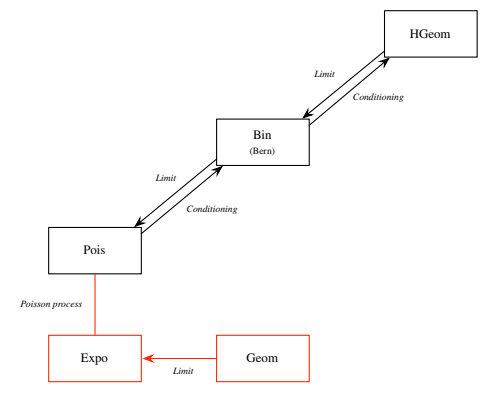
도식에서 Limit은 극한, Conditioning은 조건부로 생각하기, Poisson process는 포아송 과정을 뜻한다. \(\operatorname{HGeom}\), \(\operatorname{Bin}\), \(\operatorname{Bern}\), \(\operatorname{Pois}\), \(\operatorname{Expo}\), \(\operatorname{Geom}\)은 각각 초기하, 이항, 베르누이, 포아송, 지수, 기하분포를 나타낸다.
또한 확률론의 네 가지 기본 대상에 관한 지도에는 연속확률변수를 위한 또 하나의 청사진으로 확률밀도함수를 추가한다.
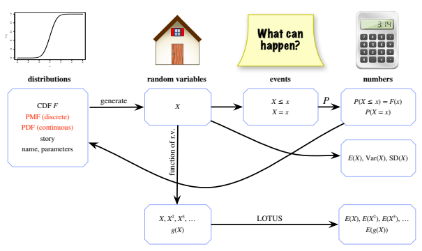
그림 5.14. 확률론의 네 가지 기본 대상은 분포, 확률변수, 사건, 수이다. 연속확률변수 \(X\)에 대해서는 \(P(X=x)=0\)이므로 확률질량함수 대신 확률밀도함수를 청사진으로 사용한다. 그림에서 distributions는 분포, random variables는 확률변수, events는 사건, numbers는 수이다. story는 이야기, name, parameters는 이름과 모수, generate는 생성, function of r.v.는 확률변수의 함수, What can happen?은 “어떤 일이 일어날 수 있는가?”를 뜻한다.
5.9 R
이 절에서는 R의 연속분포를 소개하고, 기본적인 그래프를 그리는 방법을 배우며, 시뮬레이션으로 균등분포의 보편성을 보여 주고, 포아송 과정의 도착 시각을 시뮬레이션한다.
5.9.1 균등분포, 정규분포, 지수분포
연속분포에서는 d로 시작하는 함수가 확률질량함수 대신 확률밀도함수를 나타낸다. 따라서 다음 함수들을 사용할 수 있다.
dunif,punif,runif: \(\operatorname{Unif}(a,b)\)의 확률밀도함수를 \(x\)에서 평가하려면dunif(x,a,b)를 사용한다. 누적분포함수에는punif(x,a,b)를 사용한다. \(\operatorname{Unif}(a,b)\) 분포에서 실현값 \(n\)개를 생성하려면runif(n,a,b)를 사용한다.dnorm,pnorm,rnorm: \(\mathcal N(\mu,\sigma^2)\)의 확률밀도함수를 \(x\)에서 평가하려면dnorm(x,mu,sigma)를 사용한다. 여기서mu는 평균 \(\mu\),sigma는 분산이 아닌 표준편차 \(\sigma\)이다. 누적분포함수에는pnorm(x,mu,sigma)를 사용한다. \(\mathcal N(\mu,\sigma^2)\) 분포에서 실현값 \(n\)개를 생성하려면rnorm(n,mu,sigma)를 사용한다.
주의 5.9.1 (R의 정규분포 모수). 분산이 아니라 표준편차를 입력해야 한다는 점에 유의하자! 예를 들어 \(\mathcal N(10,3)\)의 누적분포함수를 12에서 평가하려면 pnorm(12,10,sqrt(3))을 사용한다. 이를 무시하는 것은 흔하고 심각한 코딩 오류이다.
dexp,pexp,rexp: \(\operatorname{Expo}(\lambda)\)의 확률밀도함수를 \(x\)에서 평가하려면dexp(x,lambda)를 사용한다. 누적분포함수에는pexp(x,lambda)를 사용한다. \(\operatorname{Expo}(\lambda)\) 분포에서 실현값 \(n\)개를 생성하려면rexp(n,lambda)를 사용한다.
연속분포에서 위치-척도 변환이 중요하기 때문에 R은 이 세 분포 계열 각각에 기본 모숫값을 두고 있다. 균등분포의 기본값은 \(\operatorname{Unif}(0,1)\), 정규분포는 \(\mathcal N(0,1)\), 지수분포는 \(\operatorname{Expo}(1)\)이다. 예를 들어 추가 입력이 없는 dunif(0.5)는 \(\operatorname{Unif}(0,1)\)의 확률밀도함수를 0.5에서 평가하고, 추가 입력이 없는 rnorm(10)은 \(\mathcal N(0,1)\)의 실현값 10개를 생성한다. 즉 R에서 \(\mathcal N(\mu,\sigma^2)\) 확률변수를 생성하는 방법은 두 가지가 있다. 예를 들어 다음과 같이 \(\mu\)와 \(\sigma\)의 값을 정한 뒤
mu <- 1
sigma <- 2다음 두 방법 중 어느 것을 사용해도 된다.
rnorm(1,mu,sigma)
mu + sigma*rnorm(1)어느 쪽이든 \(\mathcal N(\mu,\sigma^2)\) 분포에서 추출값 하나를 생성하게 된다.
5.9.2 R에서 그래프 그리기
R에서 함수의 그래프를 그리는 간단한 방법은 curve 명령을 사용하는 것이다. 예를 들어
curve(dnorm, from=-3, to=3, n=1000)은 \(-3\)부터 3까지 표준정규 확률밀도함수의 그래프를 만든다. 실제로는 R이 서로 가까이 떨어진 유한 개의 점에서 함숫값을 평가한 뒤 매우 짧은 선분으로 점들을 연결하여 곡선처럼 보이게 한다. n=1000이라는 입력은 1000개의 점에서 평가하여 곡선이 매우 매끄러워 보이도록 지시한다. 만약 n=20을 선택하면 조각별로 선형이라는 점이 매우 분명해진다.
그래프를 그리는 또 다른 명령은 이름에 걸맞게 plot이라고 한다. 이 명령에는 그래프의 모양을 지정할 수 있는 입력이 아주 많다. 여기서는 사용법을 보여 주기 위해 curve 대신 plot을 사용해 표준정규 확률밀도함수를 다시 그려 보겠다.
plot의 가장 중요한 입력은 그래프에 표시할 \(x\) 값의 벡터와 \(y\) 값의 벡터이다. 이를 위해 유용한 명령이 seq이다. 1장에서 소개했듯이 seq(a,b,d)는 \(a\)부터 \(b\)까지 연속된 값들이 \(d\) 간격으로 떨어진 벡터를 만든다.
x <- seq(-3,3,0.01)
y <- dnorm(x)따라서 x는 \(-3\)부터 3까지 0.01 간격으로 떨어진 모든 수로 구성되고, y에는 x의 각 점에서 계산한 정규 확률밀도함숫값이 들어 있다. 이제 plot(x,y)로 두 벡터를 그리기만 하면 된다. 기본 그래프는 산점도이다. 선 그래프를 그리려면 plot(x,y,type="l")을 사용한다. xlab, ylab, main으로 축 이름과 그래프 제목을 지정할 수도 있다.
plot(x,y,type="l",xlab="x",ylab="dnorm(x)",main="N(0,1) PDF")xlim과 ylim을 이용하면 축의 범위를 직접 정할 수 있다. 예를 들어 세로축의 범위를 0부터 1까지로 하고 싶다면 plot 명령 안에 ylim=c(0,1)을 추가하면 된다.
마지막으로 그래프의 색을 바꾸려면 col="orange"나 col="green"을, 또는 마음에 드는 다른 색을 추가하면 된다!
5.9.3 로지스틱 분포와 보편성
예제 5.3.4에서 \(U\sim\operatorname{Unif}(0,1)\)이면 확률변수 \(\log(U/(1-U))\)가 로지스틱 분포를 따른다는 것을 증명했다. R에서는 \(\operatorname{Unif}(0,1)\) 실현값을 많이 생성한 다음 변환하기만 하면 된다.
u <- runif(10^4)
x <- log(u/(1-u))이제 x에는 \(\log(U/(1-U))\)의 분포에서 얻은 실현값 \(10^4\)개가 들어 있다. hist(x) 명령을 사용하여 히스토그램으로 시각화할 수 있다. 히스토그램이 로지스틱 확률밀도함수와 닮아 있어 안심이 된다. 히스토그램을 얼마나 세밀하게 나눌지 조절하려면 구간의 개수를 지정하면 된다. hist(x,breaks=100)은 더 세밀한 히스토그램을 만들고, hist(x,breaks=10)은 더 거친 히스토그램을 만든다.23
5.9.4 포아송 과정 시뮬레이션
도착률이 \(\lambda\)인 포아송 과정에서 도착 \(n\)번을 시뮬레이션하려면, 먼저 도착 간격들을 독립이고 동일한 분포를 따르는 지수 확률변수로 생성하여 벡터에 저장한다.
n <- 50
lambda <- 10
x <- rexp(n,lambda)그런 다음 ‘누적합’을 뜻하는 cumsum 함수를 사용해 도착 간격들을 도착 시각들로 바꾼다.
t <- cumsum(x)이제 벡터 t에는 시뮬레이션한 도착 시각들이 모두 들어 있다.
5.10 연습문제
ⓢ 표시가 있는 문제의 자세한 풀이는 http://stat110.net에 있다.
5.10.1 확률밀도함수와 누적분포함수
- 예제 5.1.7의 레일리 분포는 확률밀도함수 \(f(x)=xe^{-x^2/2}\), \(x>0\)을 갖는다. \(X\)가 레일리 분포를 따른다고 하자.
- \(P(1<X<3)\)을 구하라.
- \(X\)의 제1사분위수, 중앙값, 제3사분위수를 구하라. 이는 각각 \(j=1,2,3\)에 대해 \(P(X\le q_j)=j/4\)를 만족하는 값 \(q_1,q_2,q_3\)으로 정의한다.
- 어떤 구간의 모든 \(x\)에 대해 \(f(x)>1\)인 확률밀도함수 \(f\)를 하나 만들고, 이 밀도가 타당할 법한 응용 사례도 제시하라.
- 확률밀도함수 \(f\)가 어떤 구간의 모든 \(x\)에 대해 \(f(x)>1\)을 만족한다면 그 구간의 길이는 1보다 작아야 함을 보여라.
- \(F\)를 연속확률변수의 누적분포함수, \(f=F'\)를 확률밀도함수라 하자.
- \(g(x)=2F(x)f(x)\)로 정의된 \(g\)도 유효한 확률밀도함수임을 보여라.
- \(h(x)=\frac12 f(-x)+\frac12 f(x)\)로 정의된 \(h\)도 유효한 확률밀도함수임을 보여라.
- \(X\)를 누적분포함수 \(F\)와 확률밀도함수 \(f\)를 갖는 연속확률변수라 하자.
- \(P(X>c)\ne0\)인 상수 \(c\)에 대해 \(X>c\)가 주어졌을 때 \(X\)의 조건부 누적분포함수를 구하라. 즉 모든 \(x\)에 대해 \(P(X\le x\mid X>c)\)를 \(F\)로 나타내라.24
- \(X>c\)가 주어졌을 때 \(X\)의 조건부 확률밀도함수를 구하라. 이는 조건부 누적분포함수의 도함수이다.
- (b)의 조건부 확률밀도함수가 음이 아니고 적분값이 1임을 직접 보여 유효한 확률밀도함수인지 확인하라.
- 반지름이 무작위인 원을 생성하며 \(R\sim\operatorname{Unif}(0,1)\)이라 하자. 원의 넓이를 \(A\)라 하자.
- \(A\)의 누적분포함수나 확률밀도함수를 먼저 구하지 않고 \(A\)의 평균과 분산을 구하라.
- \(A\)의 누적분포함수와 확률밀도함수를 구하라.
- 68-95-99.7% 법칙은 정규 확률변수가 평균에서 표준편차의 1배, 2배, 3배 이내에 있을 근사 확률을 준다. 다음 분포들에 대한 유사한 법칙을 유도하라.
- \(\operatorname{Unif}(0,1)\).
- \(\operatorname{Expo}(1)\).
- \(\operatorname{Expo}(1/2)\). 68-95-99.7% 법칙이 표준정규분포뿐 아니라 모든 정규분포에 적용되는 것처럼 모든 지수분포에 적용되는 하나의 법칙이 있는지 논의하라.
- \(0<x<1\)에서 \(F(x)=\frac2\pi\sin^{-1}(\sqrt{x})\), \(x\le0\)에서 \(F(x)=0\), \(x\ge1\)에서 \(F(x)=1\)이라 하자.
- \(F\)가 유효한 누적분포함수임을 확인하고 그에 대응하는 확률밀도함수 \(f\)를 구하라. 이 분포는 아크사인 분포라고 하며 \(\operatorname{Beta}(1/2,1/2)\)라는 이름으로도 알려져 있다. 베타 분포는 8장에서 깊이 살펴볼 것이다.
- \(x\)가 0에 오른쪽에서 접근하거나 1에 왼쪽에서 접근할 때 \(f(x)\)가 \(\infty\)로 가는데도 \(f\)가 유효한 확률밀도함수일 수 있는 이유를 설명하라.
- 모수 \(a=3,b=2\)인 베타 분포는 \(0<x<1\)에서 확률밀도함수 \(f(x)=12x^2(1-x)\)를 갖는다. 베타 분포는 8장에서 자세히 다룬다. \(X\)가 이 분포를 따른다고 하자.
- \(X\)의 누적분포함수를 구하라.
- \(P(0<X<1/2)\)를 구하라.
- 베타 분포에 관한 결과를 인용하지 말고 \(X\)의 평균과 분산을 구하라.
- 코시 분포는 모든 실수 \(x\)에 대해 확률밀도함수 \(f(x)=1/(\pi(1+x^2))\)을 갖는다. 7장에서는 코시 분포를 다른 관점에서 소개할 것이다. 코시 확률밀도함수를 갖는 확률변수의 누적분포함수를 구하라. 힌트: 역탄젠트 함수 \(\arctan(x)\)의 도함수는 \(1/(1+x^2)\)이다.
5.10.2 균등분포와 균등분포의 보편성
- \(U\sim\operatorname{Unif}(0,8)\)이라 하자.
- 미적분을 사용하지 않고 \(P(U\in(0,2)\cup(3,7))\)을 구하라.
- \(U\in(3,7)\)이 주어졌을 때 \(U\)의 조건부분포를 구하라.
- ⓢ \(U\)를 구간 \((-1,1)\) 위의 균등 확률변수라 하자. 음수 부호를 주의하라.
- \(E(U)\), \(\operatorname{Var}(U)\), \(E(U^4)\)을 계산하라.
- \(U^2\)의 누적분포함수와 확률밀도함수를 구하라. \(U^2\)의 분포는 \((0,1)\) 위의 균등분포인가?
- ⓢ 막대를 균등하게 무작위로 고른 지점에서 부러뜨려 두 조각으로 나눈다. 더 긴 조각의 길이의 누적분포함수와 평균을 구하라.25
- 길이가 1인 막대를 균등하게 무작위로 고른 지점에서 부러뜨려 두 조각을 만든다. 더 짧은 조각과 긴 조각의 길이를 각각 \(X,Y\)라 하고 길이의 비를 \(R=X/Y\)라 하자.
- \(R\)의 누적분포함수와 확률밀도함수를 구하라.
- \(R\)의 기댓값이 존재하면 구하라.
- \(1/R\)의 기댓값이 존재하면 구하라.
- \(U_1,\ldots,U_n\)이 i.i.d. \(\operatorname{Unif}(0,1)\)이고 \(X=\max(U_1,\ldots,U_n)\)이라 하자. \(X\)의 확률밀도함수와 \(E(X)\)는 얼마인가? 힌트: 사건 \(X\le x\)를 \(U_1,\ldots,U_n\)을 이용한 사건으로 바꾸어 먼저 \(X\)의 누적분포함수를 구하라.
- \(U\sim\operatorname{Unif}(0,1)\)이라 하자. \(U\)를 이용해 \(X\sim\operatorname{Expo}(\lambda)\)를 구성하라.
- ⓢ \(U\sim\operatorname{Unif}(0,1)\)이고 \(X=\log\left(U/(1-U)\right)\)라 하자. 그러면 \(X\)는 예제 5.1.6에서 정의한 로지스틱 분포를 따른다.
- \(E(X^2)\)을 나타내는 적분식을 쓰되 계산하지는 말라.
- 미적분을 사용하지 않고 \(E(X)\)를 구하라. 힌트: \(1-U\)와 \(U\)가 같은 분포를 따른다는 대칭성이 유용하다.
- \(U\sim\operatorname{Unif}(0,1)\)이라 하자. \(U\)의 함수로서 \(x>0\)에서 \(F(x)=1-e^{-x^3}\)인 누적분포함수 \(F\)를 갖는 확률변수 \(X\)를 만들어라.
- 모수 \(a>0\)인 파레토 분포는 \(x\ge1\)에서 \(f(x)=a/x^{a+1}\)이고 그 밖에서는 0인 확률밀도함수를 갖는다. 이 분포는 통계적 모형화에 자주 사용된다.
- 모수 \(a\)인 파레토 확률변수의 누적분포함수를 구하고 유효한 누적분포함수인지 확인하라.
- 수행하려는 시뮬레이션에 i.i.d. \(\operatorname{Pareto}(a)\) 확률변수를 생성해야 한다고 하자. 컴퓨터는 i.i.d. \(\operatorname{Unif}(0,1)\) 확률변수를 생성할 수 있지만 파레토 확률변수는 생성할 수 없다. 어떻게 하면 되는지 보여라.
5.10.3 정규분포
- \(Z\sim\mathcal N(0,1)\)이라 하자. \(Z\)의 간단한 함수로 \(Y\sim\mathcal N(1,4)\)를 만들어라. \(Y\)의 평균과 분산이 올바른지 반드시 확인하라.
- 공학자들은 표준정규 누적분포함수 \(\Phi\) 대신 가끔 오차함수 \(\operatorname{erf}(z)=\frac2{\sqrt\pi}\int_0^z e^{-x^2}\,dx\)를 사용한다.
- 모든 \(z\)에 대해 \(\Phi(z)=\frac12+\frac12\operatorname{erf}(z/\sqrt2)\)가 성립함을 보여라.
- \(\operatorname{erf}\)가 홀함수, 즉 \(\operatorname{erf}(-z)=-\operatorname{erf}(z)\)임을 보여라.
- \(\mathcal N(0,1)\)의 확률밀도함수 \(\phi\)의 변곡점, 즉 곡선이 볼록에서 오목으로 또는 오목에서 볼록으로 바뀌는 점을 구하라. 볼록이면 이계도함수는 양수, 오목이면 음수이다.
- (a)의 결과와 위치-척도 변환을 이용해 \(\mathcal N(\mu,\sigma^2)\) 확률밀도함수의 변곡점을 구하라.
- 두 점 사이의 거리를 미터 단위로 측정해야 한다. 실제 거리는 10미터지만 측정 오차 때문에 정확히 측정할 수 없다. 대신 \(10+\epsilon\)을 관측하며 오차 \(\epsilon\)은 \(\mathcal N(0,0.04)\) 분포를 따른다. 관측 거리가 실제 거리 10미터에서 0.4미터 이내에 있을 확률을 구하라. \(\Phi\)를 이용한 정확한 답과 근삿값을 모두 제시하라.
- 앨리스는 잡음이 있는 통신로를 이용하여 예·아니요 질문의 답을 밥에게 보내려 한다. ‘예’를 1, ‘아니요’를 0으로 부호화해 해당 값을 보낸다. 그러나 통신로에는 잡음이 더해진다. 구체적으로 밥은 앨리스가 보낸 값에 \(\mathcal N(0,\sigma^2)\) 잡음항을 더한 값을 받는다. 잡음은 앨리스가 보낸 값과 독립이다. 밥은 받은 값이 \(1/2\)보다 크면 ‘예’로, 그렇지 않으면 ‘아니요’로 해석한다.
- 밥이 앨리스를 올바르게 이해할 확률을 구하라.
- \(\sigma\)가 매우 작으면 (a)의 결과는 어떻게 되는가? \(\sigma\)가 매우 크면 어떻게 되는가? 이 극단적인 경우의 결과가 왜 타당한지 직관적으로 설명하라.
- 한 임신부의 출산 예정일이 2020년 1월 10일이다. 물론 실제 출산일은 예정일과 다를 수 있다. 시간축에서 2020년 1월 10일이 시작되는 순간을 시간 0으로 정의하자. 출산 시각 \(T\)가 평균 0, 표준편차 8일인 정규분포를 따른다고 하자. 예정일에 출산할 확률은 얼마인가? 답은 \(\Phi\)로 나타내고 간단히 하라.
- 다음 장에서 \(X_1,X_2\)가 독립이고 \(X_i\sim\mathcal N(\mu_i,\sigma_i^2)\)이면 \(X_1+X_2\sim\mathcal N(\mu_1+\mu_2,\sigma_1^2+\sigma_2^2)\)임을 보일 것이다. 이 결과를 이용해 독립인 \(X\sim\mathcal N(a,b)\), \(Y\sim\mathcal N(c,d)\)에 대해 \(P(X<Y)\)를 구하라. 힌트: \(P(X<Y)=P(X-Y<0)\)으로 쓴 뒤 \(X-Y\)를 표준화하라. \(X,Y\)가 i.i.d.인 특수한 경우에 답이 타당한지 확인하라.
- 월터와 칼은 모두 장소 A에서 장소 B까지 자주 이동해야 한다. 월터는 걸어가며 이동시간은 평균 \(w\)분, 표준편차 \(\sigma\)분인 정규분포를 따른다. 타키온 광선을 사용하지 않고는 이동시간이 음수일 수 없지만, 음수일 가능성이 무시할 수 있을 만큼 \(w\)가 \(\sigma\)보다 훨씬 크다고 가정한다. 칼은 자동차로 이동하며 이동시간은 평균 \(c\)분, 표준편차 \(2\sigma\)분인 정규분포를 따른다. 칼의 표준편차가 더 큰 이유는 교통 상황의 변동 때문이다. 두 사람의 이동시간은 독립이다. 어느 날 월터와 칼은 A에서 B로 동시에 출발한다.
- 칼이 먼저 도착할 확률을 \(\Phi\)와 모수들을 이용해 구하라. 이를 위해 독립인 \(X_i\sim\mathcal N(\mu_i,\sigma_i^2)\)에 대해 \(X_1+X_2\sim\mathcal N(\mu_1+\mu_2,\sigma_1^2+\sigma_2^2)\)라는 다음 장에서 증명할 중요한 사실을 사용해도 된다.
- 칼이 먼저 도착할 확률이 50%보다 크기 위한 필요충분조건을 \(\Phi\) 없이 완전히 간단히 하여 제시하라.
- 장소 B의 회의는 두 사람이 A에서 출발한 지 \(w+10\)분 후 시작한다. 칼이 월터보다 회의에 제시간에 도착할 가능성이 더 크기 위한 필요충분조건을 \(\Phi\) 없이 완전히 간단히 하여 제시하라.
- \(Z\sim\mathcal N(0,1)\)이라 하자. 68-95-99.7% 법칙에 따라 \(Z\)가 \((-1,1)\)에 속할 확률은 68%이다. \((-1,1)\)보다 길이가 짧으면서도 \(Z\)를 포함할 확률은 \((-1,1)\) 이상인 구간 \((a,b)\)가 존재하는지 시각적으로 설명하라.
- \(Y\sim\mathcal N(\mu,\sigma^2)\)라 하자. \(P(|Y-\mu|<1.96\sigma)\approx0.95\)라는 사실을 이용하여 \(\mu\)가 그 안에 있을 확률이 약 0.95인 무작위 구간 \((a(Y),b(Y))\)을 구성하라. 무작위 구간이란 양 끝점이 확률변수인 구간이다. 이 구간은 \(\mu\)의 신뢰구간이라 하며, 통계학에서 데이터로 미지의 모수를 추정할 때 흔히 구하고자 한다.
- \(X\sim\mathcal N(\mu,\sigma^2)\)이고 \(Y=|X|\)라 하자. 절댓값 함수는 뾰족한 꼭짓점 때문에 0에서 미분 가능하지 않지만, \(Y\)는 잘 정의된 연속확률변수이다.
- \(Y\)의 누적분포함수를 \(\Phi\)로 나타내라. 모든 곳에서의 값을 반드시 명시하라.
- \(Y\)의 확률밀도함수를 구하라.
- \(Y\)의 확률밀도함수는 0에서 연속인가? 그렇지 않다면 확률밀도함수로 확률을 구할 때 문제가 되는가?
- ⓢ \(Z\sim\mathcal N(0,1)\)이고 \(S\)를 \(Z\)와 독립인 무작위 부호라 하자. 즉 \(S\)는 확률 \(1/2\)로 1, 확률 \(1/2\)로 \(-1\)이다. \(SZ\sim\mathcal N(0,1)\)임을 보여라.
- ⓢ \(Z\sim\mathcal N(0,1)\)이라 하고 \(\Phi\)를 \(Z\)의 누적분포함수라 하자. LOTUS를 사용하지 않고 \(E(\Phi(Z))\)를 구하라.
- ⓢ \(Z\sim\mathcal N(0,1)\)이고 \(X=Z^2\)이라 하자. \(X\)의 분포를 자유도 1인 카이제곱분포라고 한다. 이 분포는 많은 통계적 방법에 등장한다.
- 정규 누적분포함수의 값을 계산기·컴퓨터·표에서 찾지 말고 정규분포에 관한 사실을 이용해 \(P(1\le X\le4)\)의 좋은 근삿값을 구하라.
- \(\Phi,\phi\)를 각각 \(Z\)의 누적분포함수와 확률밀도함수라 하자. 임의의 \(t>0\)에 대해 \(I(Z>t)\le(Z/t)I(Z>t)\)임을 보여라. 이를 LOTUS와 함께 이용해 다음의 \(\Phi\)에 대한 하한인 밀스 부등식을 유도하라: \(\Phi(t)\ge1-\phi(t)/t\).
- \(Z\sim\mathcal N(0,1)\)이고 누적분포함수가 \(\Phi\)라 하자. 8장에서는 \(Z^2\)의 확률밀도함수가 \(w>0\)에서 \(g(w)=\frac1{\sqrt{2\pi w}}e^{-w/2}\), \(w\le0\)에서 \(g(w)=0\)임을 보일 것이다.
- \(E(Z^4)\)를 적분으로 나타내는 식을 두 가지 방법으로 구하라. 하나는 \(Z\)의 확률밀도함수에, 다른 하나는 \(Z^2\)의 확률밀도함수에 기초한다.
- \(E(Z^2+Z+\Phi(Z))\)를 구하라.
- ⓢ \(Z\sim\mathcal N(0,1)\)이라 하자. 측정 장치로 \(Z\)를 관측하지만 장치는 양수만 처리할 수 있고 \(Z\le0\)이면 0을 표시한다. 이는 중도절단 데이터의 한 예이다. 따라서 \(Z\) 대신 \(X=ZI_{Z>0}\)이 관측된다고 하자. 여기서 \(I_{Z>0}\)은 \(Z>0\)의 지시확률변수이다. \(E(X)\)와 \(\operatorname{Var}(X)\)를 구하라.
- \(Z\sim\mathcal N(0,1)\)이고 \(c\)는 음이 아닌 상수라 하자. \(E(\max(Z-c,0))\)을 표준정규 누적분포함수 \(\Phi\)와 확률밀도함수 \(\phi\)로 나타내라. 이런 계산은 계량금융에서 자주 등장한다. 힌트: LOTUS를 사용하고 적분 구간을 적절히 조정해 최댓값 기호를 처리하라. 확인을 위해 \(c=0\)일 때 답이 \(1/\sqrt{2\pi}\)로 줄어드는지 확인하라. 예제 5.4.7에서 \(E|Z|=\sqrt{2/\pi}\)임을 보였고 \(|Z|=\max(Z,0)+\max(-Z,0)\)이므로 대칭성에 따라 \(E|Z|=E(\max(Z,0))+E(\max(-Z,0))=2E(\max(Z,0))\)이다.
5.10.4 지수분포
ⓢ 우체국에 창구 직원이 두 명 있다. 앨리스가 우체국에 들어오니 두 직원이 다른 손님 밥과 클레어를 각각 응대하고 있다. 앨리스는 다음 차례로 기다린다. 직원이 손님 한 명을 응대하는 시간은 \(\operatorname{Expo}(\lambda)\) 분포를 따른다고 가정한다.26
- 앨리스가 세 손님 중 가장 마지막으로 응대를 마칠 확률은 얼마인가? 힌트: 적분은 필요하지 않다.
- 앨리스가 우체국에서 보내는 전체 시간의 기댓값은 얼마인가?
방사성 입자가 붕괴할 때까지의 시간을 \(T\)라 하고, 물리학과 화학에서 흔히 하듯 \(T\sim\operatorname{Expo}(\lambda)\)라고 하자.
- 입자의 반감기는 입자가 붕괴했을 가능성이 50%가 되는 시간이다. 통계학 용어로는 \(T\)의 분포의 중앙값이다. 입자의 반감기를 구하라.
- 작은 양의 상수 \(\epsilon\)에 대해 시각 \(t\)까지 살아남았다는 조건 아래 입자가 시간 구간 \([t,t+\epsilon]\)에서 붕괴할 확률이 \(t\)에 의존하지 않고 \(\epsilon\)에 대략 비례함을 보여라. 힌트: \(x\approx0\)이면 \(e^x\approx1+x\)이다.
- 이제 방사성 입자 \(n\)개를 생각하고 붕괴까지의 시간 \(T_1,\ldots,T_n\)은 i.i.d. \(\operatorname{Expo}(\lambda)\)라 하자. 입자들 중 하나가 처음으로 붕괴하는 시각을 \(L\)이라 하자. \(L\)의 누적분포함수, \(E(L)\)과 \(\operatorname{Var}(L)\)을 구하라.
- (c)에 이어 마지막 입자가 붕괴하는 시각 \(M=\max(T_1,\ldots,T_n)\)의 평균과 분산을 미적분을 사용하지 않고 구하라. 힌트: 시간축을 그리고 (c)를 적용하며 무기억성을 기억하라.
ⓢ 프레드는 버스 시스템에 만족하는 블리스빌로 돌아와 자동차를 팔고 싶어 한다. 그는 자동차에 최소 18,000달러를 제시하는 첫 번째 사람에게 팔기로 한다. 제시 가격은 서로 독립인 평균 12,000달러의 지수 확률변수들이며, 조건을 만족하는 제안을 얻을 때까지 계속 제안을 받을 수 있다고 가정한다.
- 프레드가 받는 제안 수의 기댓값을 구하라.
- 프레드가 자동차를 팔아 받는 금액의 기댓값을 구하라.
앞 문제처럼 프레드는 차를 팔고 싶고 제시 가격은 i.i.d.인 평균 12,000달러의 지수 확률변수이다. 다만 이번에는 가격이 크든 작든 제안을 3개 받을 때까지 기다린 후 세 제안 중 가장 높은 것을 받아들인다고 하자. 프레드가 자동차를 팔아 받는 금액의 기댓값을 구하라.
- 프레드가 다시 블로치빌을 방문한다. 버스 정류장에 이전 버스가 도착한 시각을 알려 주는 전자 표시기가 설치되었다. 버스 사이의 도착 간격은 여전히 서로 독립이고 평균 10분인 지수분포를 따른다. 프레드는 다음 버스를 기다린 다음 그 버스와 이전 버스의 도착 간격을 기록한다. 프레드가 관측하는 버스 간격의 평균 길이는 얼마인가?
- 이후 프레드는 블런더빌을 방문한다. 그곳의 버스 도착 간격도 평균 10분이며 서로 독립이다. 그런데 프레드는 정류장에 도착한 후 다음 버스를 평균적으로 1시간 넘게 기다려야 한다는 사실을 알고 실망한다! 프레드가 두 버스 도착 사이의 어느 시점에 도착하는데도 프레드부터 다음 버스까지의 평균 시간이 버스 사이의 평균 시간보다 어떻게 더 클 수 있는가? 이를 직관적으로 설명하고 가능한 구체적인 버스 간격의 이산분포를 구성하라.
프레드와 그레첸이 블로치빌의 버스 정류장에서 기다린다. 이 정류장에는 1번과 2번 두 노선의 버스가 정차한다. \(i\)번 노선의 버스는 분당 \(\lambda_i\)대의 비율인 포아송 과정에 따라 도착한다. 1번 노선의 과정은 2번 노선의 과정과 독립이다. 프레드는 1번 버스를, 그레첸은 2번 버스를 기다린다.
- 프레드가 이미 20분을 기다렸다는 조건 아래에서 자신의 버스를 평균적으로 얼마나 더 기다려야 하는가?
- 첫 번째 2번 버스가 도착하기 전에 1번 버스가 적어도 \(n\)대 지나갈 확률을 구하라. 7장의 다음 결과가 유용할 수 있다. 독립인 \(X_1\sim\operatorname{Expo}(\lambda_1)\), \(X_2\sim\operatorname{Expo}(\lambda_2)\)에 대해 \(P(X_1<X_2)=\lambda_1/(\lambda_1+\lambda_2)\)이다.
- 이 소문항에서만 \(\lambda_1=\lambda_2=\lambda\)라고 가정한다. 프레드와 그레첸이 모두 각자의 버스를 탈 때까지 걸리는 시간의 기댓값을 구하라.
ⓢ 조는 The Winds of Winter라는 책의 출간을 연속시간에서 기다리고 있다. 어떤 시작 시점을 기준으로 연 단위로 측정한, 책의 출간 소식이 게시되기까지의 대기 시간 \(T\)가 \(\lambda=1/5\)인 지수분포를 따른다고 하자.
조는 하루에도 여러 번 확인할 정도로 집착하지는 않는다. 대신 매일 끝날 때 웹사이트를 한 번 확인한다. 따라서 정확한 시간 \(T\)가 아니라 소식이 게시된 날짜를 관측한다. 이 측정값을 \(X\)라 하자. \(X=0\)은 시작 시점 이후 첫날 소식이 게시되었음을, \(X=1\)은 둘째 날 게시되었음을 뜻하며 나머지도 마찬가지이다. 1년은 365일이라고 가정한다. \(X\)의 확률질량함수를 구하라. 우리가 공부한 이름 붙은 분포인가?
지수분포는 연속시간에서 기하분포에 대응한다. 이 문제에서는 베르누이 시행이 점점 더 빠르게 이루어지지만 성공 확률은 점점 작아지는 극한에서 기하분포가 어떻게 되는지 살펴보며 둘 사이의 관계를 더 자세히 탐구한다.27
베르누이 시행이 연속시간에서 이루어진다고 하자. 첫 번째 시행, 두 번째 시행 등으로만 생각하지 말고 시행이 시간축의 점들에서 이루어진다고 상상하자. 시행은 일정한 간격으로 \(0,\Delta t,2\Delta t,\ldots\)의 시각에 이루어지며 \(\Delta t\)는 작은 양수라 하자. 각 시행의 성공 확률은 \(\lambda\Delta t\)이고 \(\lambda\)는 양의 상수라 하자. 첫 성공 이전 실패 횟수를 이산시간에서 \(G\), 첫 성공 시각을 연속시간에서 \(T\)라 하자.
- \(G\)와 \(T\)를 연결하는 간단한 식을 구하라. 힌트: 시간축을 그리고 간단한 예를 시도해 보라.
- \(T\)의 누적분포함수를 구하라. 힌트: 먼저 \(P(T>t)\)를 구하라.
- 고정된 \(t\ge0\)에서 누적분포함수들을 평가할 때 \(\Delta t\to0\)이면 \(T\)의 누적분포함수가 \(\operatorname{Expo}(\lambda)\)의 누적분포함수로 수렴함을 보여라. 힌트: 복리 극한을 이용하라. 수학 부록 A.2.5절을 보라.
라플라스 분포는 모든 실수 \(x\)에 대해 확률밀도함수 \(f(x)=\frac12e^{-|x|}\)를 갖는다. 라플라스 분포는 대칭화된 지수분포라고도 한다. 이를 다음 두 방법으로 설명하라.
- 확률밀도함수들의 그래프를 그리고 서로 어떻게 관련되는지 설명하라.
- \(X\sim\operatorname{Expo}(1)\)이고 \(S\)는 1 또는 \(-1\)이 같은 확률로 나오는 무작위 부호이며 \(S\)와 \(X\)는 독립이라 하자. 먼저 누적분포함수를 구하여 \(SX\)의 확률밀도함수를 구하고 라플라스 확률밀도함수와 비교하라.
이메일이 시간당 20통의 비율인 포아송 과정에 따라 받은 편지함에 도착한다. 세 번째 이메일이 도착한 시간을 어떤 고정된 시작 시점 이후 시간 단위로 측정해 \(T\)라 하자. 미적분을 사용하지 않고 \(P(T>0.1)\)을 구하라. 힌트: 개수-시간 이중성을 적용하라.
특정한 사람의 수명, 즉 그 사람이 얼마나 오래 사는지를 \(T\)라 하고 누적분포함수 \(F\)와 확률밀도함수 \(f\)를 갖는다고 하자. \(T\)의 위험함수는 \(h(t)=f(t)/(1-F(t))\)로 정의한다.
- \(h\)가 위험함수라고 불리는 이유, 특히 \(h(t)\)가 시각 \(t\)까지 생존했다는 조건 아래 시각 \(t\)에 사망할 확률밀도인 이유를 설명하라.
- 지수 확률변수의 위험함수는 상수이며, 역으로 \(T\)의 위험함수가 상수이면 어떤 \(\lambda\)에 대해 \(T\sim\operatorname{Expo}(\lambda)\)이어야 함을 보여라.
사람이나 동물 또는 장치의 수명을 \(T\)라 하고 누적분포함수 \(F\), 확률밀도함수 \(f\)를 갖는다고 하자. \(h\)는 앞 문제에서 정의한 위험함수라 하자. \(F\)를 알면 \(f\)를 계산할 수 있고, 이어서 \(h\)도 계산할 수 있다. 이 문제에서는 반대로 \(h\)를 알고 있을 때 \(F\)와 \(f\)를 어떻게 복원하는지 생각한다.28
- 모든 \(t>0\)에 대해 \(F(t)=1-\exp\left(-\int_0^t h(s)\,ds\right)\)임을 보여라. 힌트: 생존함수 \(G(t)=1-F(t)\)를 두고 \(\log G(t)\)의 도함수를 생각하라.
- 모든 \(t>0\)에 대해 \(f(t)=h(t)\exp\left(-\int_0^t h(s)\,ds\right)\)임을 보여라. 힌트: (a)의 결과를 적용하라.
ⓢ \(X\sim\operatorname{Expo}(\lambda)\)에 대해 LOTUS와 \(E(X)=1/\lambda\), \(\operatorname{Var}(X)=1/\lambda^2\)를 이용하고 부분적분은 최대 한 번만 사용하여 \(E(X^3)\)을 구하라. 다음 장에서는 모든 \(n\)에 대한 \(E(X^n)\)을 구하는 방법을 배운다.
ⓢ 굼벨 분포는 \(X\sim\operatorname{Expo}(1)\)일 때 \(-\log X\)의 분포이다.
- 굼벨 분포의 누적분포함수를 구하라.
- \(X_1,X_2,\ldots\)가 i.i.d. \(\operatorname{Expo}(1)\)이고 \(M_n=\max(X_1,\ldots,X_n)\)이라 하자. \(M_n-\log n\)이 굼벨 분포로 분포 수렴함을 보여라. 즉 \(n\to\infty\)일 때 \(M_n-\log n\)의 누적분포함수가 굼벨 누적분포함수로 수렴함을 보여라.
5.10.5 종합 연습
\(X,Y\)가 i.i.d.이면 \(P(X<Y)=P(Y<X)\)이지만, \(X,Y\)가 독립이 아니거나 동일한 분포를 따르지 않으면 등식이 성립하지 않을 수 있는 이유를 직관적으로 설명하라.
항상 \(0\le X\le1\)인 이산 또는 연속 확률변수 \(X\)를 생각하고 \(\mu=E(X)\)라 하자.
- \(\operatorname{Var}(X)\le\mu-\mu^2\le1/4\)임을 보여라. 힌트: 확률 1로 \(X^2\le X\)이다.
- \(\operatorname{Var}(X)=1/4\)이 되는 \(X\)의 분포는 하나뿐임을 보여라. 이 분포의 이름은 무엇인가?
예제 5.1.7의 레일리 분포는 \(x>0\)에서 확률밀도함수 \(f(x)=xe^{-x^2/2}\)를 갖는다. \(X\)가 레일리 분포를 따른다고 하자.
- 적분을 정규분포에 관한 알려진 결과로 해석하여 미적분을 많이 사용하지 않고 \(E(X)\)를 구하라.
- \(E(X^2)\)를 구하라. 힌트: LOTUS와 치환 \(u=x^2/2\)를 이용한 후 결과 적분을 지수분포에 관한 알려진 결과로 해석하면 좋다.
ⓢ 확률변수 \(X\)의 값을 관측하는 실험을 생각하자. \(X\)의 함수인 확률변수 \(T=g(X)\)를 이용해 미지의 상수 \(\theta\)를 추정한다. 이 확률변수 \(T\)를 추정량이라 한다. \(X\)는 실험에서 관측한 데이터, \(\theta\)는 \(X\)의 분포와 관련된 미지의 모수로 생각하라.
예를 들어 앞면 확률 \(\theta\)를 모르는 동전을 \(n\)번 던지는 실험을 생각하자. 실험 후 \(X\sim\operatorname{Bin}(n,\theta)\)의 값을 관측한다. \(\theta\)의 가장 자연스러운 추정량은 \(X/n\)이다.
\(\theta\)에 대한 추정량 \(T\)의 편향은 \(b(T)=E(T)-\theta\)로 정의한다. 평균제곱오차는 \(T(X)\)로 \(\theta\)를 추정할 때 제곱오차의 평균이다.
\[\operatorname{MSE}(T)=E(T-\theta)^2.\]
\(\operatorname{MSE}(T)=\operatorname{Var}(T)+(b(T))^2\)임을 보여라. 이는 평균제곱오차가 고정되면 분산이 더 커지는 대가를 치러야만 편향을 낮출 수 있고 그 역도 성립함을 뜻한다. 이는 통계학 전반에 걸쳐 나타나는 현상인 편향-분산 상충관계의 한 형태이다.
ⓢ (a) 세계 모든 나라의 인구 목록이 있다고 하자. 아직 데이터를 보지 말고 인구의 첫 자릿수가 1인 비율이 몇 퍼센트일지 추측하라. 예를 들어 인구가 1,234,567명인 나라는 첫 자릿수가 1이고 인구가 89,012,345명인 나라는 그렇지 않다.
- (a)를 한 뒤 인구 목록을 살펴보고 1로 시작하는 나라가 몇 개인지 세어라. 전체 나라의 몇 퍼센트인가? 벤포드의 법칙에 따르면 매우 다양한 실제 데이터 집합에서 첫 자릿수는 1일 확률이 약 30%, 2일 확률이 약 18%인 특정 분포를 대략 따른다. 일반적으로 무작위로 고른 원소의 첫 자릿수를 \(D\)라 하면 \(j\in\{1,2,3,\ldots,9\}\)에 대해
\[P(D=j)=\log_{10}\left(\frac{j+1}{j}\right)\]
이다. 3장 연습문제 6은 이것이 유효한 확률질량함수임을 증명하라고 한다. 데이터에서 얻은 비율은 벤포드의 법칙으로 예측한 비율과 얼마나 가까운가?
- 어떤 문제의 무작위 값, 예를 들어 무작위로 고른 나라의 인구를 과학적 표기법으로 \(X\times10^N\)이라고 쓴다고 하자. \(N\)은 음이 아닌 정수이고 \(1\le X<10\)이다. \(X\)는 \(1\le x\le10\)에서 \(f(x)=c/x\), 그 밖에서는 0인 확률밀도함수를 갖는 연속확률변수이고 \(c\)는 상수라 하자. \(c\)의 값은 얼마인가? 로그의 밑을 주의하라. 직관적으로 \(X\)의 분포가 측정 단위의 선택에 의존하지 않기를 바랄 수 있다. 그런지 알아보기 위해 \(a>0\)에 대해 \(Y=aX\)라 하자. \(Y\)의 확률밀도함수는 무엇인가? 0이 아닌 구간을 명시하라.
- 과학적 표기법으로 쓴 무작위 수 \(X\times10^N\)이 있고 \(X\)가 (c)의 확률밀도함수 \(f\)를 갖는다면 첫 자릿수, 즉 \(X\)의 첫 자릿수가 벤포드의 법칙을 확률질량함수로 가짐을 보여라. 힌트: \(D=j\)는 \(X\)의 값에 관해 무엇을 뜻하는가?
ⓢ (a) \(X_1,X_2,\ldots\)는 독립인 \(\mathcal N(0,4)\) 확률변수이고 \(J\)는 \(X_j>4\)인 가장 작은 \(j\), 즉 4를 초과하는 첫 \(X_j\)의 인덱스라 하자. \(E(J)\)를 \(\Phi\)로 나타내라.
- \(f,g\)를 모든 \(x\)에서 \(f(x)>0\), \(g(x)>0\)인 확률밀도함수라 하고 \(X\)가 확률밀도함수 \(f\)를 갖는 확률변수라 하자. 비율 \(R=g(X)/f(X)\)의 기댓값을 구하라. 이러한 비율은 우도비라는 양을 다루거나 중요도 표본추출이라는 계산 기법을 사용할 때 통계학에서 매우 자주 등장한다.
- \(F(x)=e^{-e^{-x}}\)로 정의하자. 이는 누적분포함수이고 연속이며 엄격히 증가하는 함수이다. \(X\)가 누적분포함수 \(F\)를 갖고 \(W=F(X)\)라 하자. \(W\)의 평균과 분산은 얼마인가?
\(X,Y,Z\)가 i.i.d. \(\mathcal N(0,1)\)이라 하자.
- \(E(Z^2\Phi(Z))\)를 적분으로 나타내라.
- \(P(\Phi(Z)<2/3)\)을 구하라.
- \(P(X<Y<Z)\)를 구하라.
\(X,Y,Z\)가 i.i.d. \(\mathcal N(0,1)\)이고 \(W=(\Phi(Z))^2\)라 하자.
- \(W\)의 누적분포함수와 확률밀도함수를 구하라.
- \(f_W\)를 \(W\)의 확률밀도함수, \(\phi\)를 \(Z\)의 확률밀도함수라 하자. \(E(W^3)\)를 적분으로 나타내는 식을 간단히 하지 않은 채 두 가지 방법으로 구하라. 하나는 \(f_W\), 다른 하나는 \(\phi\)에 기초해야 한다.
- \(P(X+2Y<2Z+3)\)을 \(\Phi\)로 나타내라. 힌트: 모든 확률변수를 부등식의 한쪽으로 옮겨라.
\(Z\sim\mathcal N(0,1)\)이고 \(Y=\max(Z,0)\)이라 하자. 따라서 \(Z>0\)이면 \(Y=Z\)이고 \(Z\le0\)이면 \(Y=0\)이다.
- \(E(Y)\)를 적분으로 나타내라. 간단히 하지 않아도 된다.
- \(Y_1,Y_2,\ldots\)는 각각 \(Y\)와 같은 분포를 따르는 독립 확률변수라 하자. \(N=\min\{n:Y_n=0\}\), 즉 \(Y_N=0\)인 가장 작은 \(n\)이라 하자. \(E(N)\)을 구하라.
- \(Y\)의 누적분포함수를 \(\Phi\)로 나타내라. 모든 실수에서의 값을 반드시 명시하라.
단위원 \(\{(x,y):x^2+y^2=1\}\)에서 세 점 \(A,B,C\)를 독립적으로 균등하게 무작위로 골라 원을 세 호로 나눈다. 세 호는 \(A\)와 \(B\), \(A\)와 \(C\), \(B\)와 \(C\) 사이에 형성된다. 점 \((1,0)\)을 포함하는 호의 길이를 \(L\)이라 하자. 다음 단계에 따라 \(E(L)\)을 구하라.
- 다음 논증에서 무엇이 잘못되었는지 설명하라. “호의 총 길이는 원둘레인 \(2\pi\)이다. 따라서 대칭성과 선형성에 따라 각 호의 평균 길이는 \(2\pi/3\)이다. \((1,0)\)을 포함하는 호라는 표현은 그중 하나의 호를 지정하는 방법일 뿐이다. 문제에서 \((1,0)\) 대신 \((0,-1)\)이나 원 위의 다른 특정 점을 사용해도 달라지지 않는다. 그러므로 \(E(L)=2\pi/3\)이다.”
- \((1,0)\)을 포함하는 호를 두 조각, 즉 \((1,0)\)에서 반시계 방향으로 뻗는 조각과 시계 방향으로 뻗는 조각으로 나누자. 반시계 방향과 시계 방향 조각의 길이를 각각 \(L_1,L_2\)라 하고 \(L=L_1+L_2\)로 쓰자. \(L_1\)의 누적분포함수, 확률밀도함수, 기댓값을 구하라.
- (b)를 이용해 \(E(L)\)을 구하라.
ⓢ 예제 5.7.4처럼 선수들이 한 명씩 높이뛰기를 한다. \(j\)번째 선수가 넘은 높이를 \(X_j\)라 하고 \(X_1,X_2,\ldots\)는 연속분포를 따르는 i.i.d. 확률변수라 하자. \(j\ge3\)에 대해 \(j\)번째 선수가 앞선 두 선수보다 높이 뛰면 ‘최근 기억에서 최고’라고 한다. 첫 두 선수는 이 조건의 대상이 아니다.
- 세 번째부터 \(n\)번째까지 선수 중 최근 기억에서 최고인 선수의 기댓값을 구하라.
- \(A_j\)를 \(j\)번째 선수가 최근 기억에서 최고인 사건이라 하자. \(P(A_3)\), \(P(A_4)\), \(P(A_3\cap A_4)\)를 구하라. \(A_3\)와 \(A_4\)는 독립인가?
티리온과 세르세이, 그리고 다른 손님 \(n\)명이 지지집합 \([0,1]\)인 연속분포에서 i.i.d.로 정해지는 시각에 파티에 도착하여 끝날 때까지 머문다. 시간 0은 파티의 시작, 시간 1은 끝이다. 티리온과 세르세이 둘 다 없을 때 파티는 지루하고, 둘 중 정확히 한 명이 있을 때는 재미있으며, 둘 다 있을 때는 어색하다.
- 다른 손님 \(n\)명 중 파티가 재미있는 시각에 도착하는 사람의 수는 평균적으로 몇 명인가?
- 제이미와 로버트는 다른 손님 중 두 명이다. 독립의 정의에서 양변을 계산하여 ‘제이미가 재미있는 시각에 도착한다’는 사건과 ‘로버트가 재미있는 시각에 도착한다’는 사건이 독립인지 판정하라.
- (b)의 두 사건이 독립인지, 그리고 제이미와 로버트를 제외한 나머지 모든 사람의 도착 시각이 주어졌을 때 조건부 독립인지 명확하고 직관적으로 설명하라.
\(X_1,X_2,\ldots\)를 각각 2101년, 2102년, … 보스턴의 연간 강수량(인치)이라 하자. 연간 강수량은 연속분포에서 i.i.d.로 추출된다고 가정한다. 2101년부터 시작해 앞선 모든 해보다 강수량이 많으면 최고 기록, 적으면 최저 기록이다.
- 22세기인 2101년부터 2200년까지 양 끝 연도를 포함하여, 강수량이 최저 기록이거나 최고 기록인 해의 기대 횟수를 구하라.
- 22세기 안에서 최저 기록이 나온 후 바로 다음 해에 최고 기록이 나오는 해는 평균적으로 몇 개인가? 최저 기록만 22세기에 속하면 되며 최고 기록은 그렇지 않아도 된다.
- 정의에 따라 2101년은 최고 기록이자 최저 기록이다. 새로운 최고 기록을 얻기까지 걸리는 해의 수를 \(N\)이라 하자. 모든 양의 정수 \(n\)에 대해 \(P(N>n)\)을 구하고 이를 이용해 \(N\)의 확률질량함수를 구하라. 힌트: \(P(N=n)+P(N>n)=P(N>n-1)\)임에 주목하라.
- 위 표기에서 \(E(N)\)이 무한함을 보여라.
옮긴이 주: 이산분포의 지지집합이 조밀할 수도 있으므로 지지집합 밖의 모든 점이 평평한 구간 안에 있는 것은 아니다. 그림은 지지점이 서로 떨어져 있는 경우이다. 또한 연속형의 ‘매끄럽게 증가’는 직관적 묘사이며 모든 절대연속 누적분포함수가 모든 점에서 미분 가능하다는 뜻은 아니다.↩︎
옮긴이 주: 일반적인 확률론에서는 누적분포함수가 연속이라는 조건과 절대연속이라는 조건을 구별한다. 아래의 밀도 적분 공식이 일반적으로 성립하려면 절대연속성이 필요하며, 원서의 미분 가능성만으로는 충분하지 않을 수 있다. 이하에서는 밀도로 표현되는 경우를 다룬다.↩︎
옮긴이 주: 지지집합이 조밀한 이산분포에서는 도약점이 아닌 모든 점에서 도함수가 반드시 0인 것은 아니다. 원문의 설명은 계단 모양이 잘 드러나는 전형적인 경우를 염두에 둔 것이다.↩︎
옮긴이 주: 미분되지 않는 유한 개의 점에서 밀도의 값은 임의로 정해도 적분으로 얻는 분포에 영향을 주지 않는다. 또한 밀도는 확률 0인 집합에서 값을 바꾸어도 같은 분포를 나타내므로, 여기의 지지집합 표기는 선택한 밀도 함수의 값에 의존할 수 있다.↩︎
옮긴이 주: 엄밀히는 이 표현에서 \(A\)를 보렐 집합 등 확률과 적분이 정의되는 가측 집합으로 취급한다.↩︎
옮긴이 주: 미분 가능한 점에서는 비감소 함수인 \(F\)의 도함수가 음이 아니므로 첫 조건이 따른다. 임의로 값을 지정한 개별 점에서는 밀도를 음이 아니게 선택할 수 있으며, 한 점에서의 값만으로 주변 적분이 음수임이 항상 보장되지는 않는다.↩︎
옮긴이 주: 엄밀히는 \(f\)가 가측이고 적분 가능하다는 조건을 포함해 이 주장을 이해한다. 적분으로 얻는 \(F\)는 모든 점에서 반드시 미분 가능할 필요는 없으므로 원서의 정의 5.1.1보다 일반적인 절대연속 분포를 포함한다.↩︎
옮긴이 주: 일반적으로 \(g\)는 가측이어야 하며, 이 책의 유한 기댓값 관례에서는 \(E|g(X)|<\infty\)가 필요하다.↩︎
옮긴이 주: 우변이 발산할 수도 있다. 이때 비음수 확률변수의 확장된 기댓값을 허용하면 양변을 \(+\infty\)로 해석하며, 4.1절의 유한 기댓값 관례에서는 적분이 유한한 경우에 기댓값이 존재한다.↩︎
옮긴이 주: 원문은 \(I(x>t)\)를 설명하면서 \(x\ge t\)라고 적었으나, 표시된 사건에 맞게 \(x>t\)로 옮겼다. 한 점에서의 차이는 적분값을 바꾸지 않는다.↩︎
옮긴이 주: 대표적인 중심극한정리는 독립이고 동일한 분포를 따르며 분산이 유한하고 양수인 확률변수들의 합을 중심화·표준화했을 때의 분포 수렴을 말한다. 단순히 임의의 분포에서 얻은 합에 무조건 적용되는 것은 아니다.↩︎
옮긴이 주: 엄밀히는 부정적분이 초등함수로 표현되지 않는다는 뜻이다. 오차함수 \(\operatorname{erf}\)라는 특수함수를 이용한 표현은 가능하다.↩︎
한 가지 미묘한 점은 \(\infty-\infty\)가 정의되지 않으므로 \(0\)부터 \(\infty\)까지 \(z^ne^{-z^2/2}\)의 곡선 아래 면적이 유한함도 확인해야 한다는 것이다. 이는 성립한다. \(e^{-z^2/2}\)가 극도로 빠르게, 즉 지수적 감소보다 빠르게 0에 가까워져 다항식 \(z^n\)의 증가를 충분히 상쇄하기 때문이다.↩︎
68-95-99.7% 법칙에 따르면 정규 확률변수가 평균에서 표준편차의 \(\pm2\)배 이내에 들어올 확률은 95%이다. 좀 더 정확한 근사로는 평균에서 표준편차의 \(\pm1.96\)배 이내에 들어올 확률이 95%이다. 이것이 통계학에서 95% 신뢰구간의 맥락에 1.96이 매우 자주 등장하는 이유이다. 이런 신뢰구간은 흔히 추정값 양쪽에 표준편차의 1.96배만큼 여유 구간을 두어 만든다. 옮긴이 주: 이때 표준편차는 보통 추정량의 표준오차를 뜻하며, 해당 신뢰구간의 타당성에는 추가적인 모형 또는 근사 조건이 필요하다.↩︎
옮긴이 주: 통상적인 사건에 대한 조건부확률을 사용하려면 조건 사건 \(\{X\ge s\}\)의 확률이 양수여야 한다.↩︎
옮긴이 주: 모든 \(j\ge0\)에서 조건부확률이 정의되도록 생존확률이 양수라는 조건 아래, 지수분포와 기하분포의 정해진 모수 범위를 사용한 진술이다. 경계에서 퇴화분포를 포함하는 다른 관례는 별도로 살펴보아야 한다.↩︎
옮긴이 주: 이어지는 지수 대기시간과 포아송 과정의 결론에는 버스 간격이 주변적으로 지수분포라는 것뿐 아니라 간격들이 서로 독립인 동일 지수분포를 따르는 정상 포아송 과정이라는 가정이 필요하다.↩︎
옮긴이 주: \(\lambda>0\)일 때 \([15,\infty)\)의 도착 수는 거의 확실하게 무한하다. 첫 조건의 포아송 분포는 유한한 길이의 구간에 적용하며, 무한 구간의 도착 수를 일반적인 유한값 확률변수로 취급하지 않도록 주의한다.↩︎
옮긴이 주: 정의에서 주어진 결정론적 구간의 독립성을 무작위 시각 \(T_1\) 뒤에 바로 적용하려면 추가 논증이 필요하다. 포아송 과정의 도착 시각에서 성립하는 재시작 성질을 이용하면 도착 간격들이 독립인 지수분포를 따른다는 결론을 엄밀하게 얻는다.↩︎
옮긴이 주: 최댓값이 지수분포가 아니라는 설명은 두 개 이상의 비퇴화 지수 확률변수를 대상으로 한다. 변수가 한 개뿐이면 최댓값은 그 변수 자체이다.↩︎
옮긴이 주: 원문의 ‘어떤 구간의 어느 값이든 취할 수 있다’는 표현은 일반적이지 않다. 연속분포의 지지집합은 서로 떨어진 구간들로 이루어질 수도 있다. 밀도를 갖는 분포의 누적분포함수는 일반적으로 거의 모든 점에서 미분 가능하며 밀도는 그 도함수와 거의 모든 곳에서 같다. 밀도 값은 한 점씩 바꾸어도 분포가 달라지지 않는다. 적분으로 나타내는 기댓값은 이 책의 관례에서 절대수렴을 필요로 한다.↩︎
옮긴이 주: 이 극한 관계에서는 성공 확률을 0으로 보내면서 대기시간의 척도를 적절히 조정한다.↩︎
옮긴이 주: 숫자로 지정한
breaks는 대략적인 구간 수를 제안하며, R이 경계를 조정하므로 정확히 그 개수의 구간이 만들어진다고 보장하지 않는다.↩︎옮긴이 주: 원문 4(a)의 조건부확률 표기에 \(a\)가 등장하고 ‘모든 \(c\)’라고 쓰여 있지만, 문맥에 맞도록 각각 \(c\)와 ‘모든 \(x\)’로 고쳤다.↩︎
옮긴이 주: 길이의 분포와 평균을 결정하려면 원래 막대의 길이를 지정해야 한다. 예를 들어 길이를 \(L\)이라 두거나 단위 길이를 가정할 수 있다.↩︎
옮긴이 주: 통상적인 풀이에는 각 응대시간의 독립성과 앨리스의 관찰 시점에 기존 두 응대의 남은 시간이 독립적인 지수분포가 되도록 하는 가정이 필요하다.↩︎
옮긴이 주: 기하분포를 얻으려면 베르누이 시행들이 서로 독립이어야 한다. 성공 확률 \(\lambda\Delta t\)는 1 이하여야 한다.↩︎
옮긴이 주: 문제의 복원식에는 통상 \(F(0)=0\)과 고려하는 구간에서 생존함수 \(G(t)>0\) 등의 조건이 필요하다. 일반적으로 \(F(t)=1-(1-F(0))\exp[-\int_0^t h(s)\,ds]\)이다.↩︎